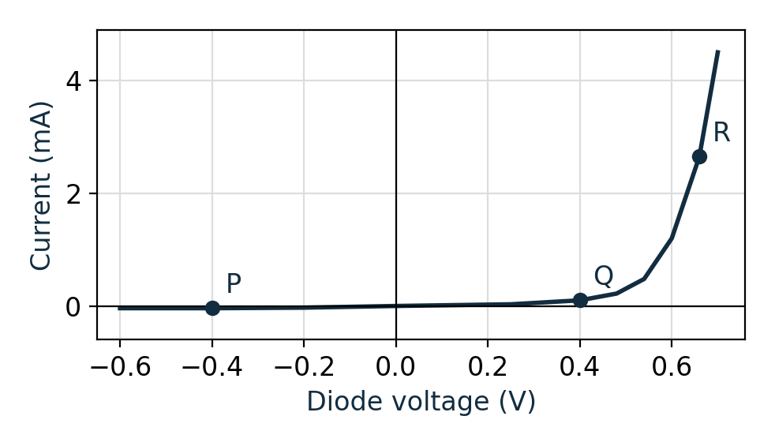
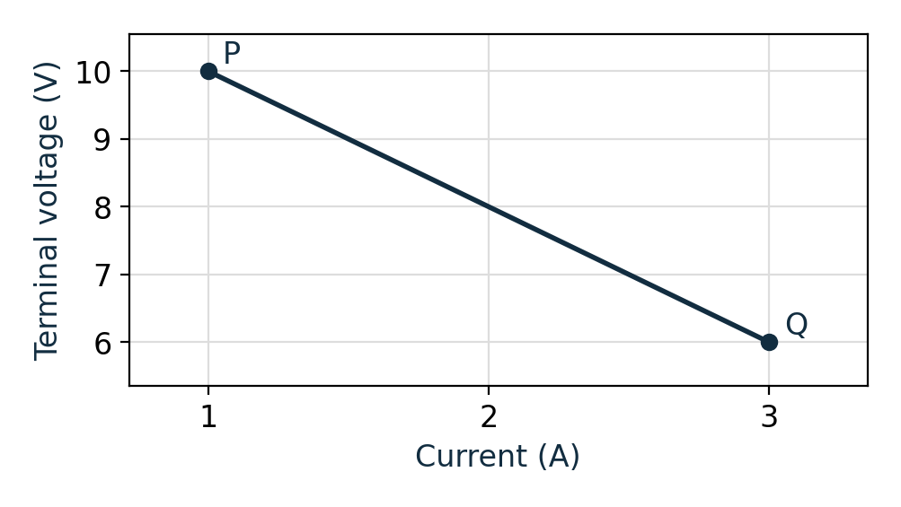
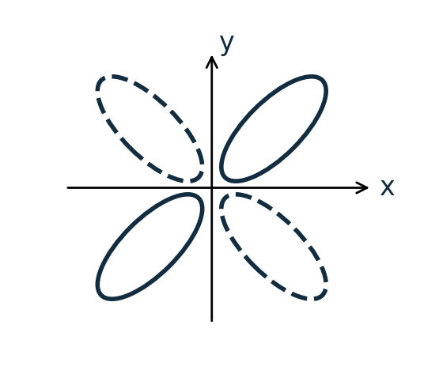
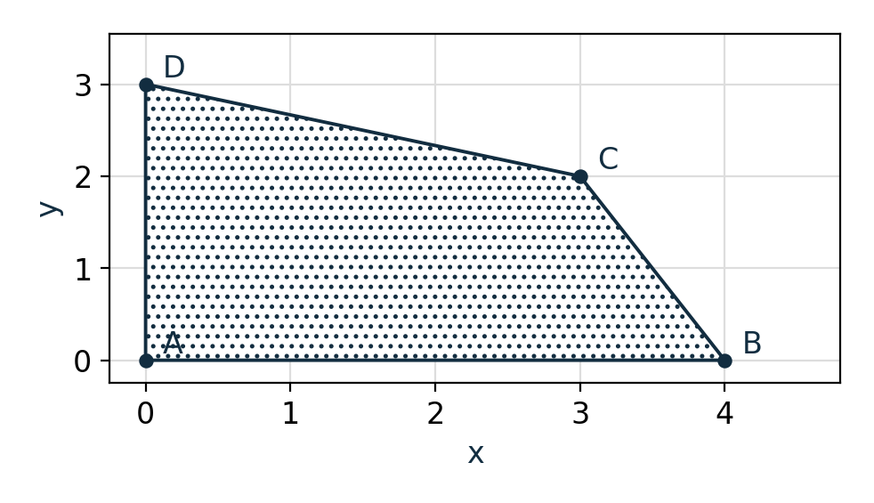

COMEDK UGET Test 4
180 minutes · 180 questions · +1 per correct answer · No negative marking
Physics
Q001. A circular Amperian loop surrounds a wire carrying 6 A out of the page and a second wire carrying 4 A into the page. Traversing counterclockwise, what is the line integral of the magnetic field?
A) 10μ₀ A
B) −2μ₀ A
C) 2μ₀ A
D) 0
Worked solution
Answer: (C) 2μ₀ A
Why and working: Counterclockwise traversal chooses the outward normal. Only the signed enclosed current enters Ampère's law, giving μ₀(6−4).
Why not the others: (A) adds opposite currents. (B) reverses the normal. (D) the cancellation is incomplete.
Q002. A uniform 4 m beam weighs 200 N and is supported at both ends. A 120 N load sits 1 m from the left support. What is the right support force?
A) 190 N
B) 80 N
C) 160 N
D) 130 N
Worked solution
Answer: (D) 130 N
Why and working: Take moments about the left support. The weight acts 2 m away. Thus 4R = 200×2 + 120×1 = 520 N·m, so R = 130 N.
Why not the others: (A) this is the left reaction. (B) this places the combined reaction incorrectly. (C) this assumes symmetric loading.
Q003. A dipole p initially makes 120° with a uniform field E. Which smaller positive rotation toward the field direction leaves its torque magnitude unchanged and lowers its potential energy?
A) 60°
B) 30°
C) 90°
D) 120°
Worked solution
Answer: (A) 60°
Why and working: Equal sine at distinct angles in [0°,180°] requires changing 120° to 60°. U changes from +pE/2 to −pE/2, so the energy falls.
Why not the others: (B) at 90° the torque is greater. (C) at 30° the torque is smaller. (D) at 0° the torque vanishes.
Q004. The north pole of a magnet recedes from a closed loop. Viewed from the magnet, what effective near-face pole must the loop develop?
A) North
B) No pole
C) Alternating poles at steady recession
D) South
Worked solution
Answer: (D) South
Why and working: The original flux falls as the magnet recedes. The loop attracts the receding north pole, adding flux in the original direction.
Why not the others: (A) a north face would repel the magnet and aid recession. (B) changing flux induces a current. (C) the trend in flux does not reverse.
Q005. A +2 μC charge is moved between two points on the same equipotential. What is its change in electrostatic potential energy?
A) +2 μJ
B) −2 μJ
C) It depends on the distance moved
D) Zero
Worked solution
Answer: (D) Zero
Why and working: ΔU = qΔV. The endpoints have ΔV = 0, so the energy change vanishes.
Why not the others: (A) charge alone cannot fix an energy shift. (B) there is no negative potential difference. (C) electrostatic potential energy depends on endpoint potentials.
Q006. A series LCR circuit is driven below its resonance frequency. Which phasor relation follows?
A) Current lags supply voltage
B) Current leads supply voltage
C) Current is in phase with supply voltage
D) Current differs in phase by exactly 90° for every positive R
Worked solution
Answer: (B) Current leads supply voltage
Why and working: Below resonance ωL is smaller and 1/(ωC) is larger than at resonance, so net reactance is negative. The circuit is capacitive.
Why not the others: (A) lag requires net inductance. (C) zero phase requires zero net reactance. (D) positive R prevents an exact 90° shift.
Q007. Which pair is ordered by increasing wavelength and gives a suitable use of the longer wave?
A) Infrared, ultraviolet; thermal imaging with ultraviolet
B) X-rays, gamma rays; ordinary television transmission with gamma rays
C) Visible, ultraviolet; thermal imaging with ultraviolet
D) Ultraviolet, infrared; thermal imaging with infrared
Worked solution
Answer: (D) Ultraviolet, infrared; thermal imaging with infrared
Why and working: Infrared is beyond the red end and has longer wavelength than UV. Thermal imagers detect infrared emission.
Why not the others: (A) the order and use are both reversed. (B) the usual spectrum order and use are incorrect. (C) UV has shorter wavelength than visible.
Q008. A Hookean spring is stretched gradually from extension x to 3x. How much work is added compared with the energy already stored at x?
A) Three times
B) Nine times
C) Twice
D) Eight times
Worked solution
Answer: (D) Eight times
Why and working: U = kx²/2 at x and 9U at 3x. The added work equals 9U−U = 8U.
Why not the others: (A) extension scaling is not energy scaling. (B) this is the final energy ratio. (C) this is only the added extension relative to x.
Q009. An optical fibre has core index 1.50. Which cladding permits total internal reflection at the core boundary for the widest set of incidence angles, measured from its normal?
A) Index 1.40
B) Index 1.30
C) Index 1.50
D) Index 1.60
Worked solution
Answer: (B) Index 1.30
Why and working: TIR requires sin i > n_clad/n_core. Reducing the cladding index lowers the threshold and widens the allowed interval.
Why not the others: (A) this permits TIR at fewer angles. (C) equal indices give no internal reflection of this kind. (D) the cladding would be optically denser.
Q010. Two independent lamps emit the same nominal wavelength onto a screen. Why does their overlap generally fail to give stationary fringes?
A) Their mean frequencies must be different
B) Light waves cannot superpose
C) Relative phase varies randomly during observation
D) Equal mean intensity eliminates interference
Worked solution
Answer: (C) Relative phase varies randomly during observation
Why and working: A steady interference term requires a stable phase difference. Independent sources vary their phases rapidly, averaging this term away.
Why not the others: (A) equal nominal wavelengths can still have random phases. (B) light fields do superpose. (D) coherent equal intensities can give high contrast.
Q011. In the same tube, a liquid is found to have streamline flow at 0.40 m/s and turbulent flow at 0.80 m/s, with a single critical speed between these measurements. Which pair of predictions follows for runs at 0.30 and 1.00 m/s?
A) Streamline at 0.30 m/s and turbulent at 1.00 m/s
B) Turbulent at 0.30 m/s and streamline at 1.00 m/s
C) Both runs must be streamline
D) Neither run can be classified without the exact critical speed
Worked solution
Answer: (A) Streamline at 0.30 m/s and turbulent at 1.00 m/s
Why and working: The critical speed separates the two regimes here and lies above 0.40 and below 0.80 m/s by premise. Thus 0.30 is certainly below it and 1.00 is certainly above it.
Why not the others: (B) reverses the ordering of regimes. (C) 1.00 exceeds even the upper bound on the transition. (D) the known bounds already place both trial speeds.
Q012. Two monochromatic beams have equal optical power. Beam A has three times B's wavelength. How do their photon arrival rates compare?
A) A supplies one third as many
B) They supply equal rates
C) A supplies three times as many photons per second
D) A supplies nine times as many
Worked solution
Answer: (C) A supplies three times as many photons per second
Why and working: Photon energy hc/λ is one third as large in A. Since power = photon rate × energy, A's rate is three times B's.
Why not the others: (A) applies energy scaling directly to counts. (B) equal power does not mean equal counts. (D) there is one inverse wavelength factor.
Q013. In a Bohr hydrogen orbit, the electron's kinetic energy is K. What is the total energy?
A) +K
B) −2K
C) −K
D) 0
Worked solution
Answer: (C) −K
Why and working: For a circular Coulomb orbit the potential energy is −2K, as follows from the centripetal force law. Adding K gives −K.
Why not the others: (A) this leaves out potential energy. (B) this is potential energy alone. (D) the bound state has negative total energy.
Q014. A 100 g ice sample at 0 °C takes in 16.7 kJ. With latent heat of fusion 334 kJ/kg and no losses, what is present?
A) 50 g ice and 50 g water at 0 °C
B) 100 g water at 0 °C
C) 100 g ice above 0 °C
D) 50 g ice and 50 g water above 0 °C
Worked solution
Answer: (A) 50 g ice and 50 g water at 0 °C
Why and working: The melted mass is Q/L = 16.7/334 = 0.050 kg. Solid and liquid coexist at the melting point.
Why not the others: (B) full melting would take 33.4 kJ. (C) the first change is phase, not ice temperature. (D) no heat remains to warm the melt.
Q015. Two hypothetical breakup routes for the same parent conserve nucleon count. X raises mean binding energy by 0.2 MeV per nucleon and Y raises it by 0.5 MeV per nucleon. What is the energy release ratio Y:X?
A) 2:5
B) 7:2
C) 5:2
D) 1:1
Worked solution
Answer: (C) 5:2
Why and working: Both releases equal the same nucleon count multiplied by the rise in mean binding. The count cancels and the ratio is 0.5/0.2 = 5/2.
Why not the others: (A) reverses the routes. (B) adds two possible releases instead of comparing them. (D) the change per nucleon differs.
Q016. A junction diode is switched from equilibrium to moderate reverse bias. What happens to its depletion layer and majority-carrier flow?
A) The layer narrows and majority carriers cross readily
B) The layer widens and majority-carrier flow across it is suppressed
C) The layer disappears but current stays small
D) The layer widens and forward diffusion grows
Worked solution
Answer: (B) The layer widens and majority-carrier flow across it is suppressed
Why and working: Reverse bias reinforces the junction field. Uncovered ions extend farther into the material and the higher barrier inhibits majority-carrier diffusion.
Why not the others: (A) describes forward bias. (C) reverse bias does not erase the depleted region. (D) the wider barrier suppresses forward diffusion.
Q017. Starting from the same ideal-gas state, two expansions end at the same larger volume, one reversible isothermal and one reversible adiabatic. Which final pressure is lower?
A) Adiabatic
B) Isothermal
C) They are equal
D) The volume alone makes comparison impossible
Worked solution
Answer: (A) Adiabatic
Why and working: During adiabatic expansion the gas does work without receiving heat, so its temperature falls. At equal final volume and amount, p = nRT/V is lower for the cooler gas.
Why not the others: (B) isothermal expansion stays at the initial temperature. (C) equal volume does not imply equal temperature. (D) the specified paths determine their temperature order.
Q018. An electrostatic field line curves through P. A small positive charge is released from rest at P. In which direction is its initial acceleration?
A) Along the forward tangent at P
B) Toward the centre of curvature of the line
C) Perpendicular to the tangent
D) Along a line joining P to the closest charge regardless of other charges
Worked solution
Answer: (A) Along the forward tangent at P
Why and working: Force qE is evaluated locally. The field-line tangent gives E, so a positive charge accelerates along it initially.
Why not the others: (B) curvature does not fix the initial force. (C) a normal is not the field direction. (D) the field includes all source contributions.
Q019. A dipole is rotated quasistatically from parallel to perpendicular in a uniform field. What work does an external agent do?
A) −pE
B) +2pE
C) +pE
D) 0
Worked solution
Answer: (C) +pE
Why and working: Slow rotation changes U = −pE cos θ from −pE to 0. External work equals the rise +pE.
Why not the others: (A) this is the field's work. (B) this would rotate the dipole all the way to antiparallel. (D) equal net force does not imply zero torque.
Q020. A mole of a rigid diatomic ideal gas and a mole of monatomic gas are each heated by 20 K at constant volume. Vibrations are inactive. What extra heat does the diatomic gas require?
A) 20R
B) 10R
C) 40R
D) 0
Worked solution
Answer: (A) 20R
Why and working: The active degrees are 5 and 3, so C_V differs by (5−3)R/2 = R. Thus the heat difference is R×20 K.
Why not the others: (B) uses only one additional degree. (C) omits the factor of one-half per degree. (D) the rotational modes add internal energy.
Q021. A resistor receives 360 J in 30 s at fixed voltage. What is its power?
A) 12 W
B) 120 W
C) 0.083 W
D) 10,800 W
Worked solution
Answer: (A) 12 W
Why and working: Power is energy per time, so P = 360/30 = 12 J/s.
Why not the others: (B) misplaces a decimal. (C) takes the reciprocal. (D) multiplies instead of dividing.
Q022. The current in a long solenoid reverses. What happens to the direction of its central magnetic field?
A) It stays the same
B) It rotates by 90°
C) It becomes radial
D) It reverses
Worked solution
Answer: (D) It reverses
Why and working: The winding direction stays fixed, so reversing current reverses the right-hand-rule axial direction.
Why not the others: (A) ignores the sign of current. (B) the symmetry axis does not change. (C) the central field is along the axis.
Q023. An ideal pendulum clock is moved from a place with acceleration g to one with g/4. How does the small-angle period change?
A) It quadruples
B) It doubles
C) It halves
D) It stays fixed
Worked solution
Answer: (B) It doubles
Why and working: Small-angle restoring acceleration is proportional to g/ℓ. Since T = 2π√(ℓ/g), replacing g by g/4 doubles T.
Why not the others: (A) misses the square root. (C) reverses the dependence. (D) length is not the only variable.
Q024. A student draws external field lines leaving a magnet's north pole and ending permanently at its south pole. Which correction is needed?
A) They continue inside from north to south
B) They continue inside the magnet from south to north
C) They stop at the south pole as drawn
D) They cross one another at the poles
Worked solution
Answer: (B) They continue inside the magnet from south to north
Why and working: Magnetic field lines form closed loops. At the south pole the lines enter the magnet and return through it to the north.
Why not the others: (A) this gives the wrong return direction. (C) a magnetic line has no isolated endpoint. (D) a single local field has one tangent direction.
Q025. Two inductors experience identical current ramps. The emf magnitude in X is three times that in Y. At the same current, what is U_X/U_Y for ideal inductors?
A) 3
B) 9
C) 1/3
D) 1
Worked solution
Answer: (A) 3
Why and working: The ramp gives emf magnitude L times the common current slope, so L_X = 3L_Y. At equal I the stored energy LI²/2 has ratio 3.
Why not the others: (B) squares the wrong quantity. (C) reverses the inductance ratio. (D) equal current does not imply equal energy.
Q026. A string fixed at both ends has two internal nodes. For length L, what is its wavelength?
A) L
B) 2L/3
C) 2L/5
D) 3L/2
Worked solution
Answer: (B) 2L/3
Why and working: Two internal nodes divide the string into three loops. Each loop spans λ/2, so L = 3λ/2.
Why not the others: (A) this has only one internal node. (C) this fits five loops. (D) this inverts the relation.
Q027. At fixed source voltage, what change to the current peak occurs if resistance in a series LCR circuit doubles and the circuit is swept through resonance again?
A) The peak doubles
B) It vanishes
C) It stays the same
D) The peak halves
Worked solution
Answer: (D) The peak halves
Why and working: At resonance the reactances cancel, leaving impedance R and current V/R. Changing only R leaves this frequency fixed but halves the peak.
Why not the others: (A) reverses the resistance scaling. (B) a finite resistance allows current. (C) the resonant frequency and peak are distinct.
Q028. At a single spherical glass-to-air interface, the centre of curvature is 15 cm to the left. Light travels left to right. Where should a real axial object in index-1.5 glass be placed so its emerging paraxial rays are parallel in air?
A) 30 cm to the left
B) 15 cm to the left
C) 45 cm to the left
D) 45 cm to the right
Worked solution
Answer: (C) 45 cm to the left
Why and working: Parallel emergence means 1/v=0. In n₂/v−n₁/u=(n₂−n₁)/R, the right side is (1−1.5)/(−15)=1/30 per cm. Thus −1.5/u=1/30 and u=−45 cm.
Why not the others: (A) omits the incident refractive index. (B) uses the curvature radius alone. (D) reverses the signed object distance.
Q029. A particle follows x(t) = 4t³ − 6t² in SI units. At what positive time is its velocity zero while its acceleration is positive?
A) 1/2 s
B) 1 s
C) 3/2 s
D) 2 s
Worked solution
Answer: (B) 1 s
Why and working: v = 12t²−12t = 12t(t−1), so the only positive zero is t=1. There a = 24t−12 = 12 m/s².
Why not the others: (A) acceleration vanishes there but velocity does not. (C) this is not a root of v. (D) velocity is positive there.
Q030. In Young's double-slit experiment in air, the screen stays fixed while wavelength and slit separation are both halved. What happens to fringe width?
A) It doubles
B) It halves
C) It stays the same
D) It becomes one quarter
Worked solution
Answer: (C) It stays the same
Why and working: Fringe width is λD/d. Halving both λ and d leaves their ratio unchanged.
Why not the others: (A) considers only separation. (B) considers only wavelength. (D) incorrectly multiplies the two half factors.
Q031. A nonrelativistic electron has kinetic energy K. It gains another 8K. What is its new de Broglie wavelength in terms of the original λ?
A) λ/3
B) λ/9
C) 3λ
D) λ/√8
Worked solution
Answer: (A) λ/3
Why and working: Its new energy is 9K. Since p = √(2mK), momentum triples and h/p becomes λ/3.
Why not the others: (B) uses linear energy scaling. (C) wavelength decreases as momentum rises. (D) uses the energy gain instead of final energy.
Q032. Two vectors have magnitudes 2 and 5 and make 60° with each other. What is the ratio of cross-product magnitude to dot product?
A) 1/√3
B) 5
C) 1
D) √3
Worked solution
Answer: (D) √3
Why and working: The common product of magnitudes cancels from (ab sin θ)/(ab cos θ), leaving tan 60° = √3.
Why not the others: (A) reverses the requested ratio. (B) this is the dot product itself. (C) sine and cosine are unequal at 60°.
Q033. A hydrogen emission spectrum contains lines ending at n = 1 and n = 2. Which process produces an absorption line identical in frequency to a specific emission line from n = 3 to n = 2?
A) Absorption from n = 1 to n = 3
B) Absorption from n = 1 to n = 2
C) The transition from n = 3 to n = 2 with a photon absorbed
D) Absorption from n = 2 to n = 3
Worked solution
Answer: (D) Absorption from n = 2 to n = 3
Why and working: Reversing the same pair of levels changes the sign of energy exchange while preserving the gap magnitude.
Why not the others: (A) changes the lower level. (B) uses a different pair of levels. (C) de-excitation releases energy.
Q034. In nuclear fusion, light nuclei combine into a heavier nucleus. What comparison explains energy release in an exothermic case?
A) The number of nucleons decreases
B) The products have more rest energy
C) The final total nuclear binding is greater than the initial total binding
D) Any heavier nucleus has greater total rest energy than all its precursors combined
Worked solution
Answer: (C) The final total nuclear binding is greater than the initial total binding
Why and working: Greater total binding means lower total rest energy at fixed nucleon count. The rest-energy difference goes to other forms.
Why not the others: (A) the reaction conserves nucleon number. (B) the mass-energy change has the opposite sign. (D) binding can make the combined mass smaller.
Q035. Three concurrent forces keep a particle in equilibrium. Two have magnitudes 6 N and 8 N at right angles. How must the third force act?
A) With 10 N opposite to their resultant
B) With 14 N opposite to the larger force
C) With 2 N along the smaller force
D) With 10 N along their resultant
Worked solution
Answer: (A) With 10 N opposite to their resultant
Why and working: The vector sum of the perpendicular forces has magnitude √(36+64)=10 N. The third vector cancels it.
Why not the others: (B) scalar addition assumes parallel forces. (C) their difference does not describe the resultant. (D) this would add rather than cancel.
Q036. Among the three labelled points P, Q and R on the diode plot, which is forward biased and has the largest current?

A) P
B) Q
C) R
D) P and Q
Worked solution
Answer: (C) R
Why and working: The horizontal axis is diode voltage. R is at positive voltage beyond the knee, with the largest positive current. P is at negative voltage and Q has much smaller forward current.
Why not the others: (A) P is reverse biased. (B) Q is forward biased but below R in current. (D) P is reverse biased and neither delivers the largest current.
Q037. A small magnetic dipole m is at an equatorial point of a much larger bar magnet. Initially m points along the larger magnet’s dipole moment. Which statement describes the initial orientation and its stability to a small rotation?
A) The torque is maximal at exact alignment as posed
B) The orientation is stable and the torque restores it after a small rotation
C) The local field vanishes, so every orientation is neutral
D) The torque is zero at exact alignment as posed, but a small rotation tends to carry m farther away from that orientation
Worked solution
Answer: (D) The torque is zero at exact alignment as posed, but a small rotation tends to carry m farther away from that orientation
Why and working: At an equatorial point the larger magnet’s field points opposite its dipole moment. Thus m is antiparallel to its local field and has zero torque exactly there. A perturbation gives torque toward alignment with that local field, away from the original antiparallel orientation.
Why not the others: (A) torque vanishes for collinear moment and field. (B) only the orientation parallel to the local field is stable. (C) the equatorial field is nonzero.
Q038. A ball on a light string moves in a vertical circle of radius R. If the string has zero tension at the top but remains taut everywhere else, what is the bottom speed?
A) √(4gR)
B) √(gR)
C) √(5gR)
D) √(3gR)
Worked solution
Answer: (C) √(5gR)
Why and working: At the top, gravity supplies centripetal acceleration, so v_top² = gR. The bottom is 2R lower. Energy conservation adds 4gR to squared speed, giving 5gR.
Why not the others: (A) assumes zero speed at the top. (B) this is the top speed. (D) uses an incorrect height or energy factor.
Q039. A charged insulating rod attracts a neutral piece of paper. Why is the attraction compatible with no charge transfer?
A) The paper instantly becomes a good conductor
B) The rod must have lost all its charge
C) Bound charges shift slightly and polarise the paper
D) Gravity becomes stronger near charged rods
Worked solution
Answer: (C) Bound charges shift slightly and polarise the paper
Why and working: The rod's nonuniform field polarises paper. Opposite induced charge is effectively closer and its attraction dominates.
Why not the others: (A) polarisation is possible in an insulator. (B) attraction does not require neutralising the rod. (D) ordinary gravitational force is not changed this way.
Q040. A metal sample has resistance R₀ at reference temperature T₀ and a positive coefficient α. With dimensions treated as fixed, what is its resistance at T₀+ΔT for small ΔT?
A) R₀/(1+αΔT)
B) R₀(1+αΔT)
C) R₀+αΔT
D) R₀(1−αΔT)
Worked solution
Answer: (B) R₀(1+αΔT)
Why and working: The assumed local law is ΔR/R₀ = αΔT. Add this positive fractional change to the baseline.
Why not the others: (A) an increase in resistivity is not a decrease in resistance. (C) a dimensionless term cannot be added to resistance. (D) this gives the wrong sign.
Q041. A flywheel with moment of inertia 2 kg·m² experiences a constant 6 N·m net torque for 4 s from rest. What angle does it rotate through?
A) 12 rad
B) 48 rad
C) 3 rad
D) 24 rad
Worked solution
Answer: (D) 24 rad
Why and working: Angular acceleration is τ/I = 3 rad/s². From rest θ = ½αt² = ½×3×16 = 24 rad.
Why not the others: (A) this is the final angular speed in rad/s. (B) omits the half in angular displacement. (C) this is angular acceleration.
Q042. A positively charged particle travels east through a field B directed north. Which electric-field direction cancels the magnetic force?
A) Upward
B) Downward
C) East
D) North
Worked solution
Answer: (B) Downward
Why and working: With east, north and up forming a right-handed triad, v×B points up. For no net force, E = −v×B points down.
Why not the others: (A) would reinforce the magnetic force. (C) would give a longitudinal force. (D) would give a northward force.
Q043. Which pairing correctly identifies the usual responses of bismuth and soft iron to a magnetic field at room temperature?
A) Bismuth diamagnetic, iron ferromagnetic
B) Both strongly ferromagnetic
C) Bismuth ferromagnetic, iron diamagnetic
D) Both paramagnetic
Worked solution
Answer: (A) Bismuth diamagnetic, iron ferromagnetic
Why and working: Bismuth develops a weak moment opposite the applied field. Iron forms magnetic domains and shows ferromagnetic response below its Curie point.
Why not the others: (B) bismuth is not ferromagnetic. (C) the material assignments are switched. (D) iron's domain response differs from weak paramagnetism.
Q044. From a spherical moon, launch speed is exactly the escape speed and air resistance is absent. What is the speed infinitely far away in the ideal limit?
A) The launch speed
B) Zero
C) Half the launch speed
D) Always nonzero because angular momentum is conserved
Worked solution
Answer: (B) Zero
Why and working: Escape speed means initial total mechanical energy is zero, taking gravitational potential zero at infinity. Thus kinetic energy tends to zero there.
Why not the others: (A) the particle loses kinetic energy as it climbs. (C) the limiting kinetic energy is zero. (D) finite angular momentum can coexist with vanishing speed at infinite radius.
Q045. A primary current rises from 0 to 4 A in 0.02 s and then falls to 1 A in 0.03 s. Mutual inductance stays constant. What is the ratio of magnitudes of mean secondary emfs, rise to fall?
A) 4/3
B) 1/2
C) 1
D) 2
Worked solution
Answer: (D) 2
Why and working: The magnitudes of current slopes are 4/.02=200 A/s and 3/.03=100 A/s. The same mutual inductance multiplies both slopes.
Why not the others: (A) ignores the different interval lengths. (B) reverses the ratio. (C) the slopes are unequal.
Q046. A series AC load draws 5 A rms at 100 V rms, with current lagging by 60°. What average power is absorbed and what is the in-phase rms current component?
A) 250 W and 2.5 A
B) 500 W and 5 A
C) 250 W and 4.33 A
D) 433 W and 4.33 A
Worked solution
Answer: (A) 250 W and 2.5 A
Why and working: The in-phase component is I cos φ = 5×½ = 2.5 A. Only this contributes to average power, giving VI cos φ = 250 W.
Why not the others: (B) assumes unity power factor. (C) 4.33 A is the quadrature component. (D) uses sin φ instead of cos φ.
Q047. Water flows steadily through a level pipe with a narrower middle section. Treat the water as ideal for Bernoulli’s equation. Where is the static pressure lower?
A) In the wide section
B) In the narrow section
C) It is equal everywhere
D) The answer is determined by height alone
Worked solution
Answer: (B) In the narrow section
Why and working: Continuity requires higher speed in the narrow section. Bernoulli's equation at equal height then gives lower static pressure there.
Why not the others: (A) pressure is higher in the slower region. (C) the kinetic term changes. (D) the speed term matters at equal height.
Q048. A symmetric thin biconvex lens in air has radii of magnitude 20 cm. It has focal length 20 cm. What is its refractive index?
A) 1.50
B) 1.25
C) 2.00
D) 2.50
Worked solution
Answer: (A) 1.50
Why and working: For light travelling left to right, R₁=+20 cm and R₂=−20 cm. Lens-maker gives 1/20=(n−1)(1/20+1/20), so n−1=1/2.
Why not the others: (B) this would give a focal length of 40 cm. (C) this includes only one curved surface. (D) this would make the focal length smaller than 20 cm.
Q049. Red light is replaced by blue light in the same single-slit setup. What happens to the central bright maximum width?
A) It becomes broader
B) It stays fixed
C) It becomes narrower
D) It disappears entirely
Worked solution
Answer: (C) It becomes narrower
Why and working: At fixed slit width, smaller wavelength reduces the diffraction angles. Blue light has shorter wavelength, so the central maximum narrows.
Why not the others: (A) longer wavelengths yield wider maxima. (B) the angular spread depends on wavelength. (D) blue light still diffracts.
Q050. Two slabs of equal thickness and area are individually held between the same pair of temperatures. X has triple Y's thermal conductivity. Compare steady heat currents.
A) X carries one third
B) X carries three times Y's heat current
C) Equal currents
D) X carries nine times
Worked solution
Answer: (B) X carries three times Y's heat current
Why and working: The slab gradient is the same in both. Fourier conduction gives heat current kAΔT/L, linear in k.
Why not the others: (A) reverses conductivity scaling. (C) ignores material dependence. (D) squares k without justification.
Q051. An ideal bridge rectifier has a sinusoidal input and a resistive load. How do its output pulse frequency and polarity compare with the input?
A) Same frequency and both polarities
B) Half the frequency and one polarity
C) Twice the frequency and one output polarity
D) Twice the frequency and alternating polarity
Worked solution
Answer: (C) Twice the frequency and one output polarity
Why and working: Both half-cycles cause load current in the same direction, producing a pulse on each half period.
Why not the others: (A) describes the unrectified input. (B) the interval between successive pulses is half the period. (D) the bridge routes both half-cycles to the same load polarity.
Q052. A closed surface has negative total electric flux. What can be inferred?
A) It encloses net negative charge
B) Its field is inward at every point
C) It contains only negative charges
D) Its external field is zero
Worked solution
Answer: (A) It encloses net negative charge
Why and working: Gauss's law makes total signed flux q_enclosed/ε₀. Only the net enclosed charge sign is fixed.
Why not the others: (B) outward contributions can exist. (C) positive charges may also lie inside. (D) external charges can make nonzero local fields.
Q053. A gas expands freely into an evacuated half of an isolated container. Which observation rules out reversibility?
A) Its work is zero
B) Temperature need not change for an ideal gas
C) Its volume becomes larger
D) It does not spontaneously return to its original half
Worked solution
Answer: (D) It does not spontaneously return to its original half
Why and working: An irreversible process does not retrace its path without changes elsewhere. Free expansion cannot be undone by infinitesimal changes of the surroundings.
Why not the others: (A) zero work alone is possible in other processes. (B) unchanged temperature alone does not determine reversibility. (C) volume increase can be mechanically reversible.
Q054. A battery remains connected as a dielectric of relative permittivity 3 fully fills an ideal parallel-plate capacitor. Which pair gives the new free plate charge and macroscopic field relative to their original values?
A) Same charge, one third field
B) Three times charge, same field
C) Three times charge, one third field
D) Same charge, same field
Worked solution
Answer: (B) Three times charge, same field
Why and working: The battery fixes V and plate spacing fixes E = V/d. The dielectric triples C, so the battery supplies charge up to Q = CV = 3Q₀.
Why not the others: (A) describes disconnection first. (C) ignores the fixed voltage across a fixed gap. (D) ignores the larger capacitance at the same voltage.
Q055. Two external loads give the terminal points P and Q on a cell's straight voltage–current graph. What are its emf and internal resistance?

A) 10 V and 2 Ω
B) 12 V and 2 Ω
C) 12 V and 1 Ω
D) 8 V and 1 Ω
Worked solution
Answer: (B) 12 V and 2 Ω
Why and working: Read P=(1 A,10 V) and Q=(3 A,6 V). V = E−Ir yields r=(10−6)/(3−1)=2 Ω and E=10+2=12 V.
Why not the others: (A) 10 V is loaded terminal voltage. (C) the voltage drop is 4 V for 2 A. (D) both the intercept and slope magnitude are misread.
Q056. An ideal-gas sample contains 0.25 mol. How many particles are present in terms of Avogadro's constant N_A?
A) 4N_A
B) N_A
C) N_A/4
D) N_A/2
Worked solution
Answer: (C) N_A/4
Why and working: A mole contains N_A particles. Multiply by 0.25 to obtain N_A/4.
Why not the others: (A) takes the reciprocal of the mole count. (B) corresponds to exactly one mole. (D) corresponds to half a mole.
Q057. A straight current-carrying wire is parallel to a uniform magnetic field. The wire is rotated by 90° about an axis perpendicular to the field. What changes?
A) Its force falls from BIL to zero
B) Its force remains zero
C) Its force rises from zero to BIL/2
D) Its magnetic force rises from zero to BIL
Worked solution
Answer: (D) Its magnetic force rises from zero to BIL
Why and working: The magnetic force magnitude BIL sin θ vanishes at θ=0° and is maximal at θ=90°.
Why not the others: (A) reverses the orientations. (B) a perpendicular current experiences force. (C) sin 90° is one.
Q058. A paramagnetic sample in a weak fixed field is warmed while its phase stays unchanged. Why does its alignment usually weaken?
A) Thermal agitation competes with magnetic alignment
B) Heating reverses the external field
C) The material becomes a permanent ferromagnet
D) Heating increases the magnetic moment of every aligned dipole without disorder
Worked solution
Answer: (A) Thermal agitation competes with magnetic alignment
Why and working: Greater thermal motion randomises orientations relative to the weak aligning field, reducing net magnetisation.
Why not the others: (B) field direction stays fixed. (C) ordinary warming does not establish ferromagnetism. (D) the key change is orientational disorder.
Q059. An ideal pipe open at both ends and another closed at one end have the same length. Which frequency is a resonance of both?
A) Their common fundamental
B) The closed pipe's third harmonic
C) The open pipe's second harmonic
D) No positive resonance is shared
Worked solution
Answer: (D) No positive resonance is shared
Why and working: In units of v/(4L), the open pipe supports even integers and the closed pipe supports odd integers. No positive integer is both.
Why not the others: (A) their fundamentals differ by two. (B) this is an odd multiple unavailable in the open pipe. (C) this is an even multiple unavailable in the closed pipe.
Q060. An AC generator spins twice as fast without changing flux amplitude, turns or area. What happens to its peak emf and frequency?
A) Only frequency doubles
B) Both double
C) Only peak emf doubles
D) The peak doubles and frequency halves
Worked solution
Answer: (B) Both double
Why and working: With Φ = Φ₀ cos ωt, the peak magnitude is NωΦ₀ and frequency is ω/(2π). Both scale linearly with speed.
Why not the others: (A) ignores the time derivative in induction. (C) one cycle occurs in half the time. (D) frequency rises as period falls.
Chemistry
Q061. The vapour pressure above an ideal solution with a nonvolatile solute is 72 mmHg. Pure solvent is 80 mmHg at the same temperature. If the solvent amount is 0.90 mol, how much solute is present?
A) 0.090 mol
B) 0.10 mol
C) 0.80 mol
D) 0.90 mol
Worked solution
Answer: (B) 0.10 mol
Why and working: The relative decrease 8/80 = 0.10 is solute mole fraction. Thus n/(0.90+n)=0.10, giving 0.90n=0.090 and n=0.10 mol.
Why not the others: (A) uses 0.10 as solute to solvent ratio instead of mole fraction. (C) confuses a pressure ratio with an amount. (D) equal amounts would halve vapour pressure.
Q062. How many distinct orbitals in shell n = 4 have magnetic quantum number m_l = 0?
A) 1
B) 8
C) 4
D) 16
Worked solution
Answer: (C) 4
Why and working: The allowed l values are 0, 1, 2 and 3. For each l, exactly one value in the range −l to +l is zero, giving four orbitals.
Why not the others: (A) counts only the s orbital. (B) would include spin states rather than orbitals. (D) counts the whole shell.
Q063. At infinite dilution, ionic contributions of M⁺ and X⁻ to Λ° of MX are in the ratio 2:3. The sum is 150 S cm² mol⁻¹. What limiting conductivity would a salt M₂Y have if λ° of Y²⁻ is 80 S cm² mol⁻¹?
A) 140 S cm² mol⁻¹
B) 200 S cm² mol⁻¹
C) 170 S cm² mol⁻¹
D) 230 S cm² mol⁻¹
Worked solution
Answer: (B) 200 S cm² mol⁻¹
Why and working: M contributes (2/5)×150=60 in MX. Each M₂Y formula unit supplies two M⁺ and one Y²⁻, so Λ°=2×60+80=200.
Why not the others: (A) counts one M⁺ instead of two. (C) uses X’s ionic share as though it were the one M⁺ contribution. (D) includes the entire conductivity of MX instead of its M⁺ contribution.
Q064. For a first-order reaction at fixed temperature, how does its half-life change if the initial reactant concentration is doubled?
A) It doubles
B) It halves
C) It stays the same
D) It becomes four times as long
Worked solution
Answer: (C) It stays the same
Why and working: First-order decay satisfies ln([A]₀/[A]) = kt. At the half-life the ratio is always 2, so t = ln 2/k independently of [A]₀.
Why not the others: (A) direct concentration dependence applies to zero-order half-life. (B) doubling [A]₀ does not double k. (D) there is no squared dependence.
Q065. Which hybridisation describes the five electron domains around P in the standard textbook model of gaseous PCl₅?
A) sp³
B) sp³d
C) d²sp³
D) sp²
Worked solution
Answer: (B) sp³d
Why and working: Five electron domains give trigonal-bipyramidal geometry. The conventional school-level label is sp³d, corresponding to five directions.
Why not the others: (A) four directions. (C) six directions. (D) three directions.
Q066. Two metals have similar atomic radii. Why can their atoms more readily form a substitutional alloy than a pair with widely different radii?
A) Replacing an atom by one of similar size causes less distortion of the lattice
B) Similar radii make both elements become negative ions
C) Each atom must move into a tiny interstitial gap
D) Similar radii make both elements lose all metallic bonding
Worked solution
Answer: (A) Replacing an atom by one of similar size causes less distortion of the lattice
Why and working: A substitutional atom takes the place of a host atom. A comparable size fits the existing site and tends to distort the surrounding lattice less.
Why not the others: (B) the metals need not form anions. (C) the added atoms occupy regular sites here. (D) metallic cohesion remains in the alloy.
Q067. Which description belongs to crystal field theory for an octahedral transition-metal complex?
A) Ligands make the d orbitals equal in energy
B) Ligands split the five metal d orbitals into two energy sets
C) Coordination number is set by the metal's mass
D) The theory requires covalent overlap of all six metal–ligand bonds
Worked solution
Answer: (B) Ligands split the five metal d orbitals into two energy sets
Why and working: The ligand field raises energies of orbitals directed toward ligands relative to those between axes. This yields e_g and t₂g sets.
Why not the others: (A) the unsplit case is the spherical reference. (C) mass does not define number of donors. (D) the basic crystal-field model treats ligands electrostatically.
Q068. An energy table refers to one mole of solid sodium. Which process is its first ionisation step once the atoms are already gaseous?
A) Na(s) → Na(g)
B) Na⁺(g) + e⁻ → Na(g)
C) Na(g) → Na⁺(g) + e⁻
D) Na(s) → Na(l)
Worked solution
Answer: (C) Na(g) → Na⁺(g) + e⁻
Why and working: First ionisation removes one electron from each neutral gaseous atom. Making the gas from solid is a separate energy contribution.
Why not the others: (A) this is sublimation or atomisation of sodium. (B) this is electron capture, the inverse step. (D) this is fusion.
Q069. Counting symmetry-equivalent positions only once, how many constitutional mononitrochlorobenzene isomers correspond to chlorine’s preferred positions in ordinary electrophilic nitration?
A) Two
B) One
C) Three
D) Five
Worked solution
Answer: (A) Two
Why and working: The two ortho positions are equivalent by ring symmetry, so they give a single ortho isomer. The one para position gives a distinct second isomer. The meta isomer is not a preferred product.
Why not the others: (B) ortho and para give distinct structures. (C) including meta would give three structures. (D) five ring hydrogens do not give five distinct preferred products.
Q070. Which listed use distinguishes methanol from ethanol in ordinary industrial or consumer contexts?
A) Methanol is the normal drinkable alcohol in beverages
B) Ethanol cannot be used as a solvent
C) Methanol may be added as a denaturant to ethanol
D) Ethanol is unsuitable for antiseptic formulations
Worked solution
Answer: (C) Methanol may be added as a denaturant to ethanol
Why and working: Adding methanol makes ethanol unsuitable for consumption because methanol is toxic. Ethanol itself is used as a solvent and in suitable antiseptic mixtures.
Why not the others: (A) methanol is toxic when ingested. (B) ethanol is a common solvent. (D) aqueous ethanol can serve as an antiseptic.
Q071. For a sparingly soluble salt MX₂, Ksp = 4.0 × 10⁻¹². Estimate its molar solubility in 0.020 M X⁻, assuming complete dissociation of the added X⁻ salt and negligible dissolution contribution to [X⁻].
A) 2.0 × 10⁻¹⁰ M
B) 1.0 × 10⁻⁴ M
C) 1.0 × 10⁻⁸ M
D) 2.0 × 10⁻⁸ M
Worked solution
Answer: (C) 1.0 × 10⁻⁸ M
Why and working: Ksp = [M²⁺][X⁻]². With [X⁻] ≈ 0.020 M, solubility = 4.0×10⁻¹²/(4.0×10⁻⁴) = 1.0×10⁻⁸ M.
Why not the others: (A) does not square the anion concentration. (B) corresponds to the pure-water result. (D) the metal ion amount per dissolved formula unit is one.
Q072. What makes the α-hydrogens of ethanal more readily removed by base than the hydrogens in ethane?
A) Ethanal has no carbonyl dipole
B) The conjugate base of ethane is stabilised by oxygen
C) The lost H is bonded directly to oxygen
D) The resulting enolate can delocalise negative charge onto oxygen
Worked solution
Answer: (D) The resulting enolate can delocalise negative charge onto oxygen
Why and working: Removing an α-proton gives a resonance-stabilised conjugate base with carbon and oxygen charge contributors. Ethane cannot delocalise the new charge in that way.
Why not the others: (A) the C=O group is polar. (B) ethane has no oxygen. (C) the α-hydrogen is on carbon.
Q073. Which species is directly used in a standard Sandmeyer conversion to chlorobenzene?
A) Anilinium chloride with HCl alone
B) Benzamide with NaCl
C) Benzenediazonium chloride with CuCl
D) Nitrobenzene with ammonium chloride
Worked solution
Answer: (C) Benzenediazonium chloride with CuCl
Why and working: CuCl assists replacement of the diazonium group by chloride. Loss of nitrogen drives the substitution on the aromatic ring.
Why not the others: (A) protonation alone does not create the diazonium group. (B) the amide does not undergo that substitution. (D) the nitro group is not a diazonium leaving group.
Q074. Removal of H⁺ from a neutral carbon acid leaves the C–H bonding pair on carbon. What intermediate is formed?
A) A carbanion
B) A carbocation
C) A neutral carbon radical
D) An alkyl cation and a hydride
Worked solution
Answer: (A) A carbanion
Why and working: Heterolysis toward carbon transfers both electrons to it. The deprotonated carbon fragment therefore carries a negative formal charge.
Why not the others: (B) carbon retained the pair, rather than losing it. (C) a radical would retain one electron in homolysis. (D) the departing species is a proton.
Q075. Which pairing correctly relates a carbohydrate to a common biological role?
A) Starch forms muscle fibres directly
B) Cellulose gives structural support in plant walls
C) Glucose stores genetic information by base sequence
D) Glycogen is the rigid framework of most plant cell walls
Worked solution
Answer: (B) Cellulose gives structural support in plant walls
Why and working: Linear β-linked cellulose chains associate into fibres. Their structural features make cellulose a wall component.
Why not the others: (A) starch is an energy reserve, not a fibrous muscle protein. (C) genetic information is encoded by nucleic acids. (D) glycogen is a storage polysaccharide.
Q076. An ideal solution of a nonvolatile nonelectrolyte has m = 0.20 mol/kg. For its solvent, K_f is 1.80 and K_b is 0.50 K kg mol⁻¹. What is the sum of the freezing-point depression and boiling-point elevation magnitudes?
A) 0.46 K
B) 0.26 K
C) 0.36 K
D) 2.30 K
Worked solution
Answer: (A) 0.46 K
Why and working: The depression is 1.80×0.20=0.36 K and elevation is 0.50×0.20=0.10 K. Their magnitudes add to 0.46 K.
Why not the others: (B) subtracts the two magnitudes. (C) leaves out boiling elevation. (D) adds constants without multiplying by molality.
Q077. Which reagent gives chiefly 1-bromobutane when added to but-1-ene, and why?
A) HCl with peroxide, through the same efficient chain
B) HBr with peroxide, through a radical chain
C) HBr without peroxide, through ionic Markovnikov addition
D) Br₂ in an inert solvent, through dibromination
Worked solution
Answer: (B) HBr with peroxide, through a radical chain
Why and working: The peroxide effect is normally observed for HBr. Br radical addition that gives the more stable secondary radical places Br on C1. Hydrogen abstraction then forms 1-bromobutane.
Why not the others: (A) HCl neither supplies bromine nor gives the ordinary peroxide effect. (C) ionic addition mainly places Br on C2. (D) bromine addition supplies two Br atoms.
Q078. A fixed charge passes through separate Ag⁺ and Cu²⁺ solutions with complete metal deposition. What is the ratio of moles Ag:Cu deposited?
A) 1:2
B) 2:1
C) 1:1
D) 4:1
Worked solution
Answer: (B) 2:1
Why and working: The electron amount Q/F is the same. Ag needs one electron per ion and Cu²⁺ needs two, so Ag's molar yield is twice Cu's.
Why not the others: (A) reverses the electron demand. (C) equal charge does not imply equal mole yields. (D) there is no squared valence factor.
Q079. Two reactants collide at the same frequency in two experiments. In Y, a larger fraction of collisions is suitably oriented, but the fraction above threshold is smaller. Without further data, what follows about rate?
A) Y must be faster
B) X must be faster
C) The rates must match
D) Either rate could be larger
Worked solution
Answer: (D) Either rate could be larger
Why and working: In the qualitative collision model a productive encounter requires both conditions. Opposing trends provide no sufficient information about how often both are satisfied.
Why not the others: (A) ignores falling energy qualification. (B) ignores improved orientation. (C) equal total collision frequency does not fix effective collisions.
Q080. Which d orbital is represented by the cross-section in the diagram? Solid and dashed outlines indicate opposite signs of the wavefunction.

A) d_xy
B) d_x²−y²
C) p_x
D) d_z²
Worked solution
Answer: (A) d_xy
Why and working: The xy dependence vanishes along either plane and changes sign across each. This produces four lobes between the x and y axes.
Why not the others: (B) its lobes lie along the axes. (C) it has two lobes and only one nodal plane. (D) it has axial lobes and an equatorial ring.
Q081. Under acidic conditions dichromate commonly reduces to which chromium ion?
A) Cr²⁺
B) Cr³⁺
C) CrO₄²⁻
D) Cr(s)
Worked solution
Answer: (B) Cr³⁺
Why and working: Acidic dichromate reduction is conventionally written Cr₂O₇²⁻ + 14H⁺ + 6e⁻ → 2Cr³⁺ + 7H₂O.
Why not the others: (A) this is not the usual endpoint. (C) chromate keeps Cr at +6. (D) complete reduction to chromium metal is not the standard reaction.
Q082. In a tetrahedral complex MA₂B₂, how many distinct cis/trans arrangements of the two A ligands exist?
A) Two
B) Three
C) One
D) Four
Worked solution
Answer: (C) One
Why and working: Every pair of tetrahedral sites makes the same angle at M, so any chosen pair can be brought into any other pair by a tetrahedral rotation. There are no opposite sites distinct from adjacent sites.
Why not the others: (A) cis/trans pairs require distinguishable adjacent and opposite positions. (B) counting labelled sites treats equivalent rotations as different structures. (D) the four sites have one kind of pairwise separation.
Q083. Which comparison of the standard MO descriptions of O₂ and O₂⁺ is correct?
A) O₂⁺ has greater bond order because one antibonding electron was removed
B) O₂⁺ has lower bond order because a bonding electron was removed
C) Both have equal bond order because only charge changes
D) O₂⁺ has zero bond order
Worked solution
Answer: (A) O₂⁺ has greater bond order because one antibonding electron was removed
Why and working: Ionisation removes an electron from a high-energy π antibonding orbital. In (N_b−N_a)/2 this raises bond order from 2 to 2.5.
Why not the others: (B) the removed electron is antibonding. (C) MO occupation changes with charge. (D) the remaining bonding imbalance is positive.
Q084. Which listed compound is the yellow solid used as the observation in the iodoform test?
A) CHCl₃
B) CHI₃
C) CCl₄
D) CH₂Cl₂
Worked solution
Answer: (B) CHI₃
Why and working: Iodoform is triiodomethane, CHI₃, and separates as a characteristic yellow precipitate.
Why not the others: (A) this is chloroform. (C) this is tetrachloromethane. (D) this is dichloromethane.
Q085. Which product is released when aqueous sodium phenoxide is acidified with dilute HCl?
A) Benzyl alcohol
B) Chlorobenzene
C) Phenol
D) Benzoic acid
Worked solution
Answer: (C) Phenol
Why and working: Phenoxide accepts a proton on oxygen. The aromatic C–O connectivity stays intact, giving C₆H₅OH.
Why not the others: (A) would need a side-chain CH₂ group. (B) protonation does not replace oxygen with chlorine. (D) the starting ion has no carboxyl group.
Q086. An aqueous solution releases heat when additional water is mixed in at constant pressure. What sign does the enthalpy of this dilution step have?
A) Positive
B) Zero because only solvent is added
C) Sign depends on the mass unit chosen
D) Negative
Worked solution
Answer: (D) Negative
Why and working: With only expansion work, q_p equals ΔH. Heat leaves the system in the stated step, so q_p and ΔH are negative.
Why not the others: (A) this would describe heat uptake. (B) new solute–solvent interactions can change enthalpy. (C) changing units does not change the sign.
Q087. Which carbonyl compound is commonly used as a solvent, for example to remove some nail coatings?
A) Methanal
B) Ethanal
C) Propanone
D) Benzaldehyde
Worked solution
Answer: (C) Propanone
Why and working: Propanone, also called acetone, is a volatile polar solvent. It dissolves many organic coating constituents.
Why not the others: (A) formaldehyde is commonly encountered in aqueous preservatives and resins. (B) ethanal is primarily a synthetic intermediate. (D) benzaldehyde is familiar as an aromatic fragrance or flavour ingredient.
Q088. Mixing only glycine and alanine, how many distinct linear tripeptide sequences contain exactly two Gly residues and one Ala residue if termini have definite direction?
A) 1
B) 2
C) 6
D) 3
Worked solution
Answer: (D) 3
Why and working: N-to-C order distinguishes Ala–Gly–Gly, Gly–Ala–Gly and Gly–Gly–Ala. Only the position of Ala matters.
Why not the others: (A) reversing the two unlike ends can change the sequence. (B) the middle position is distinct from both ends. (C) interchanging identical Gly entries makes no new sequence.
Q089. During protonation of an alkene, identify the electron donor and acceptor in the bond-forming step.
A) H⁺ donates and the π bond accepts
B) The alkene donates a proton rather than electrons
C) The alkene and H⁺ both donate electron pairs
D) The alkene π pair donates and H⁺ accepts
Worked solution
Answer: (D) The alkene π pair donates and H⁺ accepts
Why and working: The electron-rich π bond supplies both electrons to form a C–H bond. The proton accepts the pair as an electrophile.
Why not the others: (A) a proton has no electron pair to donate. (B) the step forms a C–H bond with incoming H⁺. (C) one participant must accept the donated pair.
Q090. At the same temperature, two dilute solutions of the same nonelectrolyte have concentrations 0.10 M and 0.30 M. Which has the greater osmotic pressure?
A) The 0.30 M solution, by a factor of three
B) The 0.10 M solution, by a factor of three
C) They have equal osmotic pressure
D) The 0.30 M solution, by a factor of nine
Worked solution
Answer: (A) The 0.30 M solution, by a factor of three
Why and working: For the same nonelectrolyte at fixed T, π = cRT. The concentration ratio is 3, so the pressure ratio is 3.
Why not the others: (B) reverses the ratio. (C) concentration changes at fixed temperature. (D) the concentration factor is linear.
Q091. Which comparison is correct when a dry cell supplies current and an electrolytic cell is driven by a source?
A) Both require external electrical energy to drive their cell reactions
B) The dry cell produces electrical work from a spontaneous reaction; the electrolytic cell consumes electrical energy
C) Oxidation is at the cathode in the dry cell only
D) Neither has an oxidation half-reaction
Worked solution
Answer: (B) The dry cell produces electrical work from a spontaneous reaction; the electrolytic cell consumes electrical energy
Why and working: A discharging dry cell operates galvanically. The electrolytic cell uses supplied electrical work to drive its reaction. Oxidation still occurs at the anode of each.
Why not the others: (A) a functioning galvanic dry cell is a source. (C) oxidation defines the anode in both. (D) redox involves both oxidation and reduction.
Q092. Reductive ozonolysis of which alkene gives two molecules of propanone per molecule of alkene?
A) But-2-ene
B) 2-Methylpropene
C) Hex-3-ene
D) 2,3-Dimethylbut-2-ene
Worked solution
Answer: (D) 2,3-Dimethylbut-2-ene
Why and working: Cleavage makes each double-bond carbon a carbonyl centre. To yield propanone on both sides, each original carbon must carry two methyl groups.
Why not the others: (A) each carbon retains H and yields ethanal. (B) one side gives methanal. (C) each side retains H and gives propanal.
Q093. Two reactions have the same Arrhenius prefactor at one temperature. X has the larger activation energy. Which comparison follows at that temperature?
A) k_X is larger
B) Both rate constants are equal
C) k_X is smaller
D) k_X is negative
Worked solution
Answer: (C) k_X is smaller
Why and working: In k = A exp(−E_a/RT), the larger barrier makes the exponent more negative. Equal prefactors then give the lower rate constant for X.
Why not the others: (A) the sign in the exponent is negative. (B) the barrier remains a variable even if A is equal. (D) a positive prefactor times the exponential stays positive.
Q094. In neutral or faintly alkaline water, permanganate commonly reduces to brown MnO₂. How many electrons does each Mn gain?
A) 3
B) 5
C) 1
D) 7
Worked solution
Answer: (A) 3
Why and working: Mn is +7 in MnO₄⁻ and +4 in MnO₂. The lowering by three units equals a gain of three electrons.
Why not the others: (B) five applies to reduction to Mn²⁺. (C) one applies to forming manganate(VI). (D) seven would give metallic Mn.
Q095. Three electrons occupy an otherwise empty set of three equal-energy p orbitals in the ground state. What arrangement is expected?
A) A pair in one orbital and one in another
B) All three in the same orbital
C) One in each, with one spin opposite to the other two
D) One electron in each with parallel spins
Worked solution
Answer: (D) One electron in each with parallel spins
Why and working: Hund's rule maximises singly occupied degenerate orbitals and their parallel spins before pairing.
Why not the others: (A) pairing starts too early. (B) Pauli excludes more than two in one orbital. (C) it has fewer parallel spins than the ground-state arrangement.
Q096. A metalloprotein binds oxygen reversibly at an iron site. Why is it described as having a coordination role for iron?
A) The iron is linked to surrounding donor atoms that help define its chemical environment
B) The iron must exist as iron metal separate from the protein
C) Each ligand must be an electrically charged gas
D) An iron site cannot bind another species once it has any ligand
Worked solution
Answer: (A) The iron is linked to surrounding donor atoms that help define its chemical environment
Why and working: Donor atoms from a ligand environment bind the metal and affect its interactions. A coordination site may also allow reversible binding of another ligand such as oxygen.
Why not the others: (B) iron need not be elemental metal. (C) donors can be neutral groups within larger molecules. (D) occupied sites can coexist with another available site.
Q097. Phenol is treated with aqueous NaOH. Which combined statement about the product and ring activation is correct?
A) Phenoxide forms and its electron donation activates the ring
B) A phenyl cation forms and activates the ring
C) Cyclohexanol forms because the aromatic ring is reduced
D) Phenol remains unchanged because its O–H is less acidic than water
Worked solution
Answer: (A) Phenoxide forms and its electron donation activates the ring
Why and working: Hydroxide deprotonates phenol. Resonance stabilises the phenoxide and increases electron density at ortho and para positions.
Why not the others: (B) base removes H⁺ from oxygen rather than oxygen from the ring. (C) no reducing reagent is present. (D) phenol is the stronger acid of the two.
Q098. Which feature permits ethanol molecules to hydrogen-bond to one another?
A) A C–C bond as a hydrogen-bond donor
B) An O–H donor and an oxygen lone-pair acceptor
C) A permanent formal charge on every oxygen
D) Hydrogen atoms on methyl carbon as the strongest donors
Worked solution
Answer: (B) An O–H donor and an oxygen lone-pair acceptor
Why and working: In ethanol an H bonded to oxygen interacts with a lone pair on neighbouring oxygen. The same functional group supplies both donor and acceptor sites.
Why not the others: (A) a C–C bond contains no H for donation. (C) hydrogen bonding does not require ionic molecules. (D) the substantially polar O–H bond is the conventional donor.
Q099. Which name applies to (CH₃)₂CHCOOH?
A) Butanoic acid
B) 3-Methylpropanoic acid
C) Propan-2-oic acid
D) 2-Methylpropanoic acid
Worked solution
Answer: (D) 2-Methylpropanoic acid
Why and working: The carboxyl carbon is C1 of the longest chain containing it. C2 bears one methyl branch on a three-carbon parent.
Why not the others: (A) a four-carbon unbranched carboxylic acid has different connectivity. (B) the branch is on C2. (C) the carboxyl carbon is always the terminal C1.
Q100. An intact polypeptide loses its α-helix while peptide bonds stay unbroken. Which level is directly diagnosed as disrupted by the lost helix?
A) Primary
B) Secondary
C) Quaternary only
D) Tertiary only
Worked solution
Answer: (B) Secondary
Why and working: An α-helix is local backbone organisation supported by hydrogen bonds. Loss of the helix is a secondary-structure change, even with the same sequence.
Why not the others: (A) the peptide sequence remains intact. (C) subunit arrangement is not measured here. (D) the helix itself is local organisation even if overall folding also changes.
Q101. Which statement expresses the third-law reference for entropy?
A) All liquids have zero entropy at room temperature
B) Any system has zero entropy when its pressure is zero
C) Entropy of an isolated system decreases in every spontaneous process
D) A perfect crystal has zero entropy at absolute zero
Worked solution
Answer: (D) A perfect crystal has zero entropy at absolute zero
Why and working: A perfect crystal with a unique ground-state configuration has one microstate in the absolute-zero limit, giving S = 0 on the third-law scale.
Why not the others: (A) liquids have many accessible arrangements at room temperature. (B) pressure alone does not establish a unique zero-temperature state. (C) this reverses the usual second-law direction.
Q102. A solute dimerises fully in an ideal dilute solution. What molar mass does freezing-point depression suggest if dimerisation is ignored?
A) Half its monomer molar mass
B) Twice its monomer molar mass
C) Its monomer molar mass
D) Four times its monomer molar mass
Worked solution
Answer: (B) Twice its monomer molar mass
Why and working: Two monomer units give one dissolved particle, so i = ½. Inference using i = 1 attributes the weaker depression to half the expected mole count and twice the molar mass.
Why not the others: (A) the inferred amount falls, so the inferred molar mass rises. (C) dimerisation changes the particle count. (D) the count falls by a factor of two only.
Q103. What happens to solid PbSO₄ on both plates of a lead accumulator during charging?
A) It is converted back to different active materials at the two plates
B) It remains on both plates and only water changes
C) Both plates become metallic Pb
D) Both plates become PbO₂
Worked solution
Answer: (A) It is converted back to different active materials at the two plates
Why and working: Charging reverses discharge. Sulfate on the negative plate is reduced to Pb, and sulfate on the positive plate is oxidised to PbO₂.
Why not the others: (B) both plate solids participate. (C) the positive plate does not end as Pb metal. (D) the negative plate does not end as PbO₂.
Q104. Which class best describes a reagent replacing one group on a saturated carbon by another, leaving the carbon skeleton and its bond multiplicity unchanged?
A) Addition
B) Elimination
C) Substitution
D) Skeletal rearrangement
Worked solution
Answer: (C) Substitution
Why and working: The defining change is exchange of a group at an existing centre. Addition or elimination would change the net groups or bond multiplicity, and skeletal rearrangement changes connectivity.
Why not the others: (A) adds groups rather than exchanging them. (B) removes groups with formation of unsaturation in a typical case. (D) the carbon framework stays in place.
Q105. An ion designated Eu²⁺ has [Xe] 4f⁷. Which feature helps explain the relative accessibility of this +2 state among lanthanoids?
A) A filled 5d subshell
B) A noble-gas-only configuration
C) A filled 4f subshell
D) A half-filled 4f subshell
Worked solution
Answer: (D) A half-filled 4f subshell
Why and working: The 4f subshell has seven orbitals, so f⁷ is half-filled. This extra stability favours the stated divalent configuration relatively.
Why not the others: (A) the given configuration has no 5d electrons. (B) 4f electrons remain beyond xenon. (C) a filled 4f subshell is f¹⁴.
Q106. Which familiar use can involve compounds from the phenol family?
A) Phenolic derivatives can be used as antiseptic agents
B) Phenols form the main ionic component of saline
C) Phenol and its derivatives contain no covalent O–H bonds
D) All phenols are vitamins because they carry OH
Worked solution
Answer: (A) Phenolic derivatives can be used as antiseptic agents
Why and working: Some formulated antiseptic compounds are phenolic derivatives. A property of a derivative at a stated application does not make the parent suitable for oral use.
Why not the others: (B) saline is based on dissolved salts. (C) the phenol class has an aromatic OH group. (D) the presence of an OH group does not define a vitamin.
Q107. Which condensed formula is but-2-yne?
A) HC≡CCH₂CH₃
B) CH₂=CHCH₂CH₃
C) CH₃CH₂CH₂CH₃
D) CH₃C≡CCH₃
Worked solution
Answer: (D) CH₃C≡CCH₃
Why and working: A four-carbon chain with a triple bond starting at carbon 2 has that bond between the two internal carbons.
Why not the others: (A) the triple bond begins at C1. (B) this contains a double bond. (C) there is no multiple bond.
Q108. Which carboxylic acid is formed by strong oxidation of propan-1-ol without changing carbon count?
A) Ethanoic acid
B) Propanone
C) 2-Methylpropanoic acid
D) Propanoic acid
Worked solution
Answer: (D) Propanoic acid
Why and working: The terminal CH₂OH is oxidised through CHO to COOH. The same three-carbon skeleton yields CH₃CH₂COOH.
Why not the others: (A) has only two carbons. (B) this ketone normally comes from a secondary alcohol. (C) its skeleton contains four carbons.
Q109. An enzyme sample loses activity after heating. A separate low-temperature treatment restores its original fold without making new peptide bonds. What would support folding loss as the cause of inactivity?
A) Catalytic activity returning with the restored fold
B) A changed amino-acid sequence after heating
C) Complete cleavage to free amino acids
D) The unchanged fold during inactivity
Worked solution
Answer: (A) Catalytic activity returning with the restored fold
Why and working: The active site depends on geometry. Recovery after restoring folded structure without a sequence change supports reversible loss of the active conformation.
Why not the others: (B) this would indicate a primary-structure change. (C) refolding alone cannot rejoin free amino acids. (D) if the fold was unchanged, this mechanism would lack evidence.
Q110. Why is the conventional ground-state assignment for Cr [Ar] 3d⁵4s¹ instead of [Ar] 3d⁴4s²?
A) A 4s orbital cannot hold two electrons
B) The 3d subshell can hold only five electrons
C) The near-energy subshells allow the half-filled 3d arrangement to be favoured
D) Chromium has one fewer electron than the alternative configuration
Worked solution
Answer: (C) The near-energy subshells allow the half-filled 3d arrangement to be favoured
Why and working: Both descriptions have the same total electron count. The closely spaced 3d and 4s levels and stability of the half-filled d arrangement make d⁵s¹ the ground state.
Why not the others: (A) 4s can hold an opposite-spin pair. (B) five is half of the d capacity. (D) both have six electrons beyond argon.
Q111. Iron is scratched through a tin coating and exposed to water and oxygen. Why can the exposed iron corrode faster locally than bare iron?
A) Tin always oxidises first like zinc
B) Tin completely removes dissolved oxygen
C) The scratch converts iron into an insulator
D) Tin is more noble, so exposed iron can act as a small galvanic anode
Worked solution
Answer: (D) Tin is more noble, so exposed iron can act as a small galvanic anode
Why and working: The contacting metals form a galvanic couple in electrolyte. Iron oxidises at the exposed anode, and a much larger tin-coated area can support cathodic reduction.
Why not the others: (A) tin is more noble than iron in this comparison. (B) oxygen reduction can occur on the cathodic surface. (C) the connection still conducts.
Q112. Why do trivalent lanthanoid ionic radii decrease along the series?
A) Added 4f electrons shield additional nuclear charge poorly
B) The number of protons decreases
C) All later ions have higher oxidation states than +3
D) Added 4f electrons completely cancel the increasing nuclear charge
Worked solution
Answer: (A) Added 4f electrons shield additional nuclear charge poorly
Why and working: Nuclear charge increases while 4f shielding is incomplete. The stronger effective attraction contracts the ions at the same +3 state.
Why not the others: (B) proton number rises. (C) their oxidation state is fixed. (D) poor shielding is central to the contraction.
Q113. For a reaction at constant T and pressure, ΔH is positive and ΔS is positive. Under what condition is ΔG negative, assuming those quantities are constant?
A) T < ΔH/ΔS
B) T > ΔH/ΔS
C) T = ΔH/ΔS
D) At every positive T
Worked solution
Answer: (B) T > ΔH/ΔS
Why and working: ΔG = ΔH−TΔS. Both ΔH and ΔS are positive, so TΔS must exceed ΔH.
Why not the others: (A) below the threshold ΔG is positive. (C) at equality ΔG is zero. (D) a positive entropy term can be too small at low T.
Q114. An ether product has formula C₄H₁₀O. It can be made by SN2 using methoxide and a primary three-carbon substrate. Which name fits?
A) 2-Methoxypropane
B) Ethoxyethane
C) 1-Methoxypropane
D) Butan-1-ol
Worked solution
Answer: (C) 1-Methoxypropane
Why and working: Methoxide adds the OCH₃ group. The unbranched primary substrate gives CH₃OCH₂CH₂CH₃. The longest alkyl chain attached to oxygen is propane, with methoxy at C1.
Why not the others: (A) would require a secondary propyl substrate. (B) contains two ethyl groups, not methyl and propyl. (D) has an O–H group rather than two carbon groups on oxygen.
Q115. Which feature best explains why an endocrine hormone can act on a distant organ?
A) It is carried in the circulation to cells that have its receptor
B) It acts only where its gland touches a target cell
C) It binds equally to all types of cells
D) It provides mechanical force to adjacent tissues
Worked solution
Answer: (A) It is carried in the circulation to cells that have its receptor
Why and working: Endocrine signals enter blood and can travel widely. Responsive cells recognise the hormone through specific receptors.
Why not the others: (B) direct contact is unnecessary. (C) responses depend on receptor expression. (D) hormones are chemical messengers.
Q116. Which feature makes an alkyne capable of producing a terminal acetylide upon deprotonation?
A) Any hydrogen on a distant methyl group
B) An internal triple bond with no terminal H
C) A hydrogen directly on an sp-hybridised carbon of C≡C
D) A terminal double bond instead of a triple bond
Worked solution
Answer: (C) A hydrogen directly on an sp-hybridised carbon of C≡C
Why and working: A terminal alkyne has an sp C–H bond. Its conjugate anion keeps charge in an orbital with greater s-character, aiding its relative stability.
Why not the others: (A) a methyl C–H is not the defining acidic site. (B) there is no terminal proton to remove. (D) a vinylic sp² C–H is a different group.
Q117. Which electron-filling series distinguishes the actinoids from the corresponding lanthanoid 4f series?
A) 4d
B) 5f
C) 5p
D) 6f
Worked solution
Answer: (B) 5f
Why and working: Actinoids are associated with progressive 5f filling, though individual configurations vary. The earlier lanthanoids are associated with 4f filling.
Why not the others: (A) 4d is a transition-metal series. (C) 5p is a main-group subshell series. (D) actinoids do not constitute a 6f series.
Q118. Which vitamin–role pairing is correct?
A) Vitamin D serves mainly as the clotting vitamin
B) Vitamin C is the vitamin whose deficiency classically causes rickets
C) Vitamin A is the only water-soluble vitamin
D) Vitamin K supports normal blood clotting
Worked solution
Answer: (D) Vitamin K supports normal blood clotting
Why and working: Vitamin K is needed for the normal function of several coagulation proteins.
Why not the others: (A) vitamin D is associated with calcium regulation. (B) vitamin D deficiency can cause rickets; vitamin C deficiency causes scurvy. (C) vitamin A is fat soluble.
Q119. Why are the carbon–carbon bond lengths in benzene equal in the standard aromatic picture?
A) C–C bonds permanently alternate between isolated single and double bonds
B) The molecule contains no π electrons
C) Hydrogen exchange continually moves three localized double bonds around
D) Six π electrons are delocalised around the ring
Worked solution
Answer: (D) Six π electrons are delocalised around the ring
Why and working: Equivalent resonance contributors describe a delocalised π system. All six links therefore have the same average bond character and length.
Why not the others: (A) static alternation predicts different lengths. (B) benzene contains six π electrons. (C) resonance does not move atoms or switch structures in time.
Q120. If one DNA strand segment is 5′-AGTC-3′, which is its antiparallel complementary sequence written 5′→3′?
A) TCAG
B) AGTC
C) GACT
D) CUGA
Worked solution
Answer: (C) GACT
Why and working: The partner directly opposite is 3′-TCAG-5′ using A–T and G–C. Reading that strand from its 5′ end reverses the written order to GACT.
Why not the others: (A) this writes the aligned complement 3′→5′. (B) this repeats the original sequence. (D) U is not a standard DNA base.
Mathematics
Q121. What area lies inside x²/16 + y²/9 ≤ 1 and to the left of the y-axis?
A) 6π
B) 12π
C) 3π
D) 24π
Worked solution
Answer: (A) 6π
Why and working: The semi-axes are 4 and 3, so the full area is 12π. Reflection makes the two halves equal.
Why not the others: (B) counts the entire ellipse. (C) counts one quadrant. (D) doubles the whole ellipse.
Q122. For positive noninteger x, solve floor(x) + sgn(x−3) = 2, where floor means the greatest integer at most x.
A) No solution
B) (2,3)
C) (3,4)
D) (1,2)
Worked solution
Answer: (A) No solution
Why and working: For 0<x<3 the sign is −1, so the floor would have to be 3, impossible. For x>3 the floor would have to be 1, also impossible.
Why not the others: (B) the sum is 2−1=1 there. (C) the sum is 3+1=4 there. (D) the sum is 1−1=0 there.
Q123. Which equation is homogeneous in the standard sense that its right-hand side is a function of y/x alone for x ≠ 0?
A) dy/dx = 1 + (y/x)²
B) dy/dx = x + y/x
C) dy/dx = y + x
D) dy/dx = y/x²
Worked solution
Answer: (A) dy/dx = 1 + (y/x)²
Why and working: Setting v=y/x makes the first right-hand side 1+v², independent of x. The others retain a separate x factor or term.
Why not the others: (B) the additive x stays. (C) this becomes x(v+1). (D) this becomes v/x.
Q124. A point has position vector (2,−3,1). What is the position vector of its reflection in the origin?
A) (−2,−3,1)
B) (2,3,−1)
C) (2,−3,1)
D) (−2,3,−1)
Worked solution
Answer: (D) (−2,3,−1)
Why and working: The origin is the midpoint of a point and its reflection. Their vectors sum to zero, so reverse all component signs.
Why not the others: (A) changes only the first sign. (B) keeps the first sign. (C) keeps the original point.
Q125. If cos θ = 3/5 and θ is acute, what is cos 2θ?
A) 7/25
B) 9/25
C) 16/25
D) −7/25
Worked solution
Answer: (D) −7/25
Why and working: Use cos 2θ = 2 cos²θ−1 = 18/25−25/25 = −7/25.
Why not the others: (A) reverses the subtraction. (B) this is cos²θ alone. (C) this is sin²θ.
Q126. Line L is r=(t,0,0) and line M is r=(s,6,8). Both parameters are real. The connector joins points with t−s=2. What is its length compared with the shortest connector?
A) It is the shortest connector, of length 10
B) It has length √104 instead of 10
C) It has length 12 instead of 10
D) It has length 10 instead of 8
Worked solution
Answer: (B) It has length √104 instead of 10
Why and working: Every connector has fixed y and z offsets 6 and 8, so its squared length is (t−s)²+100. At offset 2 it is √104, whereas the minimum occurs when t=s and is 10.
Why not the others: (A) the extra x offset raises the length. (C) adds perpendicular lengths linearly. (D) both fixed offsets contribute to the minimum.
Q127. The feasible region is x≥0, y≥0, y≤2 and x+y≥3. Which statement holds?
A) It is bounded because y≤2
B) It is empty
C) It is unbounded, although y stays in a bounded interval
D) It contains all points in the first quadrant
Worked solution
Answer: (C) It is unbounded, although y stays in a bounded interval
Why and working: Take y=0. Every x≥3 is feasible, extending indefinitely, while 0≤y≤2 throughout.
Why not the others: (A) a bound on one coordinate is insufficient. (B) (3,0) is feasible. (D) (0,0) violates the sum constraint.
Q128. Which graph lies everywhere below y = 2ˣ by exactly 3 units at the same x, and what is its horizontal asymptote?
A) y = 2^(x−3), asymptote y=−3
B) y = 3−2ˣ, asymptote y=3
C) y = 2ˣ+3, asymptote y=3
D) y = 2ˣ−3, asymptote y=−3
Worked solution
Answer: (D) y = 2ˣ−3, asymptote y=−3
Why and working: Subtracting 3 changes each output by −3. As x tends to negative infinity, 2ˣ tends to zero, so the translated graph tends to −3.
Why not the others: (A) the exponent shift is horizontal and leaves the asymptote at zero. (B) this reverses the growth and has the wrong asymptote. (C) this moves the graph upward.
Q129. A bag is chosen by a coin toss, after which two draws are made with replacement. Bag X has red fraction 1/2 and bag Y has red fraction 1/4. Find the chance of two red draws.
A) 5/32
B) 3/16
C) 9/64
D) 5/16
Worked solution
Answer: (A) 5/32
Why and working: Within each bag the two draws are independent. Total probability is ½(½)² + ½(¼)² = 1/8+1/32 = 5/32.
Why not the others: (B) this does not square the within-bag probabilities correctly. (C) this squares the marginal on one draw as if the bag were reselected each time. (D) this omits the half weights.
Q130. Find a and b if a(1,1,0) + b(0,1,1) = (−2,1,3).
A) a=3, b=−2
B) a=−2, b=3
C) a=−2, b=1
D) a=2, b=3
Worked solution
Answer: (B) a=−2, b=3
Why and working: The sum has components (a,a+b,b). Set a=−2 and b=3 from the outside components, then verify a+b=1.
Why not the others: (A) swaps the first and third coordinates. (C) treats the middle coordinate as b. (D) loses the negative first component.
Q131. Let f(x)=√(x−1), g(x)=x−3. What is the real domain of f/g?
A) (1,3) ∪ (3,∞)
B) [1,∞)
C) [1,3) ∪ (3,∞)
D) R excluding {3}
Worked solution
Answer: (C) [1,3) ∪ (3,∞)
Why and working: The square root requires x≥1. Division additionally excludes x=3. At x=1 the quotient 0/(−2) is defined.
Why not the others: (A) the square root may equal zero. (B) the denominator vanishes at 3. (D) the numerator is undefined for x<1.
Q132. A system simplifies to x+y=4 and x+y=5. How many real solutions does it have?
A) One
B) Zero
C) Two
D) Infinitely many
Worked solution
Answer: (B) Zero
Why and working: The same left side cannot take both values. Geometrically the equations represent parallel distinct lines.
Why not the others: (A) a unique intersection does not exist. (C) no point satisfies both. (D) infinite solutions require the same line.
Q133. For x>0, find the derivative of ln(eˣ/x).
A) eˣ−1/x
B) 1+1/x
C) 1/x−1
D) 1−1/x
Worked solution
Answer: (D) 1−1/x
Why and working: Since eˣ/x is positive, expand the logarithm to x−ln x. Its derivative is 1−1/x.
Why not the others: (A) ln(eˣ) simplifies to x. (B) the quotient gives a subtraction. (C) this reverses the order of terms.
Q134. Which set is empty?
A) {x in R such that x²+4=0}
B) {x in R such that x²=4}
C) {0}
D) {x in R such that x²=0}
Worked solution
Answer: (A) {x in R such that x²+4=0}
Why and working: A real square is nonnegative, so x²+4 is at least 4. The other sets contain real solutions or an explicit element.
Why not the others: (B) it contains 2 and −2. (C) zero is an element. (D) zero satisfies the equation.
Q135. A stone's height above ground is h(t)=24t−3t² metres during its flight. At what nonnegative time is height maximised?
A) 8 s
B) 12 s
C) 3 s
D) 4 s
Worked solution
Answer: (D) 4 s
Why and working: The vertical velocity h′(t)=24−6t changes from positive to negative through t=4. The second derivative −6 confirms a maximum.
Why not the others: (A) the height returns to zero there. (B) it falls outside the flight's nonnegative-height interval. (C) the slope is still positive at 3 s.
Q136. For a>0, which is a primitive of 1/(x²−a²) on x>a?
A) (1/a) arctan(x/a) + C
B) (1/(2a)) ln((x+a)/(x−a)) + C
C) (1/(2a)) ln((x−a)/(x+a)) + C
D) ln(x²−a²) + C
Worked solution
Answer: (C) (1/(2a)) ln((x−a)/(x+a)) + C
Why and working: Split the rational function into (1/(2a))(1/(x−a)−1/(x+a)). Integrating the two logs combines them into the displayed ratio.
Why not the others: (A) arctan differentiates to a sum-of-squares denominator. (B) inverts the ratio and negates the derivative. (D) its derivative has numerator 2x.
Q137. If A×B has 18 elements, A has 3 and A∩B has 2, how many elements are in A∪B?
A) 9
B) 7
C) 6
D) 16
Worked solution
Answer: (B) 7
Why and working: Cartesian cardinality gives 3×size(B)=18, so size(B)=6. Inclusion–exclusion gives 3+6−2=7.
Why not the others: (A) double-counts the two common elements. (C) counts B alone. (D) subtracts from the product instead of the sum.
Q138. For the linear equation dx/dy − x = 0, what is x(y+ln 2)/x(y) for a positive solution?
A) 1/2
B) 2
C) ln 2
D) 1
Worked solution
Answer: (B) 2
Why and working: Integrating dx/x=dy gives x(y)=Ceʸ. Advancing y by ln 2 multiplies the value by e^(ln 2)=2 independent of C.
Why not the others: (A) this corresponds to decreasing y by ln 2. (C) the shift enters the exponent. (D) a nonzero positive solution grows.
Q139. For functions f(x)=2x−1 and g(x)=x², what is the largest real x for which (2f−g)(x)=2?
A) 4
B) 2
C) 0
D) There is no real x
Worked solution
Answer: (B) 2
Why and working: Combine the functions to get 4x−2−x². Setting it equal to 2 gives x²−4x+4=0, so the only solution is x=2.
Why not the others: (A) the linear coefficient is not the root. (C) at zero the function is −2. (D) the discriminant is zero and the root exists.
Q140. Starting facing east, a ray turns clockwise by 225° and then counterclockwise by π/2 radians. What is its final angle in [0,2π), measured counterclockwise from east?
A) 5π/4
B) 3π/4
C) 7π/4
D) π/4
Worked solution
Answer: (A) 5π/4
Why and working: Convert −225° to −5π/4. Adding π/2 gives −3π/4. Adding one full turn, 2π, yields 5π/4.
Why not the others: (B) takes the magnitude of the signed angle. (C) would correspond to a −45° net turn. (D) would point northeast.
Q141. One line is parallel to direction (3,4,0). A second is parallel to (0,0,1). What is their acute-or-right angle?
A) 0°
B) 45°
C) 90°
D) 60°
Worked solution
Answer: (C) 90°
Why and working: The dot product of the direction vectors is zero. Both are nonzero, so cos of their angle is zero.
Why not the others: (A) requires parallel directions. (B) would require a nonzero dot product. (D) would require a positive dot product.
Q142. The graph shows feasible vertices A through D. For which two vertices is 2x+y maximised?

A) B and C
B) A and D
C) C and D
D) A and B
Worked solution
Answer: (A) B and C
Why and working: From A=(0,0), B=(4,0), C=(3,2), D=(0,3), the objective is 0,8,8,3. Both B and C attain the maximum.
Why not the others: (B) those values are 0 and 3. (C) D gives only 3. (D) A gives zero.
Q143. Which pair gives the roots of x²−4x+13=0?
A) 2 ± 3i
B) −2 ± 3i
C) 2 ± 9i
D) 4 ± 3i
Worked solution
Answer: (A) 2 ± 3i
Why and working: Complete the square: (x−2)²=−9, so x−2=±3i.
Why not the others: (B) the square shifts by +2. (C) takes −9 to have square root 9i. (D) the shift is half the linear coefficient's magnitude.
Q144. A fair coin chooses bag A or B. Their green fractions are 3/4 and 1/4. Two draws with replacement are made from that one bag and both are green. What is the posterior probability of A?
A) 3/4
B) 9/10
C) 1/2
D) 1/10
Worked solution
Answer: (B) 9/10
Why and working: The pair likelihoods are 9/16 and 1/16. The equal priors cancel in Bayes' ratio, giving 9/(9+1)=9/10.
Why not the others: (A) uses evidence from one draw alone. (C) ignores that the pair is stronger evidence for A. (D) this is the posterior of B.
Q145. A is 2×3 and B is 3×2. For which statement are both sides defined without an additional size restriction?
A) A+B = B+A
B) A²B = AB²
C) A(BA) = (AB)A
D) A(AB) = (AB)A
Worked solution
Answer: (C) A(BA) = (AB)A
Why and working: BA is 3×3 and AB is 2×2, so both sides have shape 2×3. Associativity makes them equal.
Why not the others: (A) A and B have different shapes. (B) neither non-square matrix can be squared here. (D) A times AB has inner dimensions 3 and 2.
Q146. Solve −3 ≤ 2−x < 5 over the reals.
A) (−3,5]
B) [−3,5)
C) (−5,3]
D) [−5,3)
Worked solution
Answer: (A) (−3,5]
Why and working: Subtract 2 to get −5≤−x<3. Multiplication by −1 reverses both inequalities, giving −3<x≤5.
Why not the others: (B) switches the open and closed sides. (C) does not correctly reverse the bounds. (D) misplaces both signs.
Q147. A linear system has A=[[2,1],[1,1]], and A⁻¹=[[1,−1],[−1,2]]. Changing only the first right-hand value by +3 perturbs the solution how?
A) Δx=−3, Δy=6
B) Δx=6, Δy=3
C) Δx=3, Δy=3
D) Δx=3, Δy=−3
Worked solution
Answer: (D) Δx=3, Δy=−3
Why and working: Linearity gives Δsolution=A⁻¹(3,0)ᵀ. Three times the first column of the inverse yields (3,−3).
Why not the others: (A) uses the second column. (B) uses the first column of A itself. (C) drops the negative sign.
Q148. For x>1 let y=(x−1)^(x²). Find y′/y.
A) 2x/(x−1)+x² ln(x−1)
B) x²/(x−1)
C) 2x ln(x−1)
D) 2x ln(x−1)+x²/(x−1)
Worked solution
Answer: (D) 2x ln(x−1)+x²/(x−1)
Why and working: Taking ln gives ln y=x² ln(x−1). The product rule supplies both terms 2x ln(x−1) and x²/(x−1).
Why not the others: (A) swaps the factors differentiated in the product formula. (B) treats the exponent as fixed. (C) omits derivative of the log factor.
Q149. How many orders can five different books be placed on a shelf if one specified book must be first?
A) 120
B) 5
C) 24
D) 60
Worked solution
Answer: (C) 24
Why and working: With the first position fixed, the remaining four books fill four places in 4! = 24 ways.
Why not the others: (A) includes all choices for the first place. (B) does not arrange the remaining places. (D) does not account for the fixed book.
Q150. For a>0 and −a<x<a, which function has derivative −1/√(a²−x²) and value zero at x=0?
A) arcsin(x/a)
B) arccos(x/a)
C) −arcsin(x/a)
D) −arctan(x/a)
Worked solution
Answer: (C) −arcsin(x/a)
Why and working: The derivative of arcsin(x/a) is (1/a)/√(1−x²/a²)=1/√(a²−x²). Negation gives the specified derivative and its value at zero is zero.
Why not the others: (A) the derivative has the wrong sign. (B) its derivative is correct but its value at 0 is π/2. (D) its derivative has a sum-of-squares denominator.
Q151. For x>0, solve dy/dx + y/x = 2x with y(1)=1.
A) y=x²
B) y=(2x³−1)/(3x)
C) y=x⁻¹
D) y=(2x³+1)/(3x)
Worked solution
Answer: (D) y=(2x³+1)/(3x)
Why and working: The integrating factor is x. Then (xy)′=2x², so xy=2x³/3+C. At 1 this gives C=1/3.
Why not the others: (A) this has y′+y/x=3x. (B) this gives y(1)=1/3. (C) this solves the corresponding homogeneous equation.
Q152. Which factorisation proves 5ⁿ−1 divisible by 4 for every positive integer n?
A) 5ⁿ−1 = (5+1)(1+5+⋯+5ⁿ⁻¹)
B) 5ⁿ−1 = (5−1)(1+5+⋯+5ⁿ⁻¹)
C) 5ⁿ−1 = 5(5ⁿ⁻¹−1)
D) 5ⁿ−1 = (5−1)ⁿ
Worked solution
Answer: (B) 5ⁿ−1 = (5−1)(1+5+⋯+5ⁿ⁻¹)
Why and working: Multiplying a finite geometric sum by 5−1 causes middle terms to cancel. The remaining factor 4 proves the divisibility.
Why not the others: (A) the terms do not cancel with addition. (C) this gives 5ⁿ−5. (D) the power does not distribute over subtraction.
Q153. The vector of P on segment AB is (A+3B)/4, with A and B interpreted as position vectors. What is AP:PB?
A) 3:1
B) 1:3
C) 4:1
D) 1:4
Worked solution
Answer: (A) 3:1
Why and working: Subtract A to get P−A=¾(B−A). The remaining displacement B−P is ¼(B−A), giving 3:1.
Why not the others: (B) reverses the ratio. (C) four parts represent the whole. (D) passes off the full segment as one piece.
Q154. Let E be the real 2×2 matrix whose only nonzero entry is a 1 in row 1, column 2. Which statement holds?
A) E²=E
B) E²=I
C) E²=0 despite E≠0
D) E is invertible because it has a nonzero entry
Worked solution
Answer: (C) E²=0 despite E≠0
Why and working: E sends (x,y) to (y,0). Applying E again gives (0,0), so E² is zero.
Why not the others: (A) applying it a second time kills the image. (B) the second output is always zero. (D) its kernel contains all (x,0).
Q155. For a sequence, the sum of its first n terms is Sₙ = n²+2n. What is the fifth term?
A) 35
B) 11
C) 24
D) 9
Worked solution
Answer: (B) 11
Why and working: The fifth term is S₅−S₄=(25+10)−(16+8)=11.
Why not the others: (A) 35 is the cumulative sum through five. (C) 24 is the cumulative sum through four. (D) 9 is the fourth term.
Q156. A parametric curve has x=t+sin t and y=1−cos t. At t=0, its slope is zero. Does the curve have another horizontal tangent for 0<t<2π?
A) Yes; t=π gives an ordinary horizontal tangent
B) Yes; t=π/2 gives a horizontal tangent
C) No; the only other zero of dy/dt occurs where dx/dt also vanishes and the slopes become unbounded
D) Every tangent there is horizontal
Worked solution
Answer: (C) No; the only other zero of dy/dt occurs where dx/dt also vanishes and the slopes become unbounded
Why and working: dy/dt=sin t vanishes only at π in that open interval. Near π the slope sin t/(1+cos t)=tan(t/2) is unbounded, ruling out a horizontal tangent there.
Why not the others: (A) at π the ratio is not determined by its numerator alone. (B) π/2 gives slope 1. (D) for instance t=π/2 gives nonzero slope.
Q157. Find a primitive of (x+1)/√(x²+2x+5).
A) 2√(x²+2x+5)+C
B) ln(x²+2x+5)+C
C) 1/√(x²+2x+5)+C
D) √(x²+2x+5)+C
Worked solution
Answer: (D) √(x²+2x+5)+C
Why and working: Set u=x²+2x+5; du=2(x+1)dx. Then ½∫u^(−1/2) du = √u+C.
Why not the others: (A) its derivative doubles the integrand. (B) log requires a denominator u, not √u. (C) differentiating a reciprocal square root gives a negative power −3/2.
Q158. Which is a line's slope if it makes an angle of 135° with the positive x-axis?
A) 1
B) −1
C) −√3
D) 0
Worked solution
Answer: (B) −1
Why and working: Slope equals tan of inclination. tan 135°=−tan 45°=−1.
Why not the others: (A) uses the acute reference angle with the wrong sign. (C) uses a 60° reference angle. (D) zero is horizontal.
Q159. A parallelogram has adjacent side vectors a and b. Which condition on a and b implies its diagonals are perpendicular?
A) They are perpendicular
B) Their lengths sum to one
C) They have equal lengths
D) Their dot product is positive
Worked solution
Answer: (C) They have equal lengths
Why and working: The diagonals are a+b and a−b. Their dot product equals the difference of the squared side lengths, and is zero if lengths match.
Why not the others: (A) a general rectangle need not have perpendicular diagonals. (B) the sum condition permits unequal lengths. (D) the mixed dot products cancel regardless.
Q160. A real square matrix has a right inverse B, so AB=I. Which consequence follows?
A) B is uniquely determined and BA=I
B) Only AB=I can be concluded in finite square dimensions
C) A has determinant zero
D) There may be several different right inverses
Worked solution
Answer: (A) B is uniquely determined and BA=I
Why and working: Taking determinants gives det(A)det(B)=1, so A is invertible. Multiplying by A⁻¹ gives B=A⁻¹, the unique two-sided inverse.
Why not the others: (B) square sizes allow the determinant argument. (C) its determinant is nonzero. (D) every right inverse equals A⁻¹.
Q161. In a double cone, a plane through the vertex and containing the axis meets the cone in which figure?
A) Only a point
B) A pair of intersecting generating lines
C) A circle
D) A nondegenerate hyperbola
Worked solution
Answer: (B) A pair of intersecting generating lines
Why and working: Any axial cross-section through the apex cuts along the two straight generator directions, which meet at the vertex.
Why not the others: (A) the plane contains generators as well as the vertex. (C) a circle comes from a transverse plane not through the vertex. (D) passing through the vertex gives a degenerate section.
Q162. For f(x)=x eˣ, what is f″(0)?
A) 1
B) 0
C) 3
D) 2
Worked solution
Answer: (D) 2
Why and working: Product rule gives f′=eˣ(x+1), then f″=eˣ(x+2). At zero this equals 2.
Why not the others: (A) this is f′(0). (B) this is f(0). (C) miscounts product-rule contributions.
Q163. Evaluate ∫₀¹ x√(1−x²) dx.
A) 2/3
B) 1/2
C) π/4
D) 1/3
Worked solution
Answer: (D) 1/3
Why and working: Substitute u=1−x², du=−2x dx. Reversing limits gives ½∫₀¹√u du=½×2/3=1/3.
Why not the others: (A) omits the half from du. (B) treats the radical like a constant. (C) would arise from a quarter-circle integral without x.
Q164. Which coordinate plane contains P=(−2,0,5)?
A) xy-plane
B) yz-plane
C) No coordinate plane
D) xz-plane
Worked solution
Answer: (D) xz-plane
Why and working: In the xz-plane the y-coordinate is zero, while x and z are free.
Why not the others: (A) the xy-plane would require z=0. (B) the yz-plane would require x=0. (C) the zero y-coordinate places P on a plane.
Q165. Vectors a=(1,0,1) and b=(0,2,0) form adjacent sides of a triangle. Find its area.
A) 2√2
B) 2
C) √2
D) 1
Worked solution
Answer: (C) √2
Why and working: The cross product is (−2,0,2), with length √8=2√2. Half that parallelogram area gives √2.
Why not the others: (A) this is the full parallelogram area. (B) uses just one nonzero cross component. (D) this takes half of just one component.
Q166. For F(x)=∫₂ˣ e^(t²) dt, which function has derivative −e^(x²) for all real x?
A) −F(x)
B) F(x)+2
C) F(x)−2
D) F(x²)
Worked solution
Answer: (A) −F(x)
Why and working: By the fundamental theorem F′(x)=e^(x²). Negating the function negates its derivative.
Why not the others: (B) an added constant vanishes on differentiation. (C) subtracting a constant leaves the derivative unchanged. (D) the chain rule gives 2x e^(x⁴), not the required function.
Q167. A step function equals 2 for x<0 and 5 for x≥0. What is its right-hand limit at zero?
A) 2
B) 5
C) 7/2
D) It does not exist
Worked solution
Answer: (B) 5
Why and working: All x just to the right have f(x)=5, so the value approached from that direction is 5.
Why not the others: (A) this is the left-hand limit. (C) averaging sided limits is not the rule. (D) the right-hand and two-sided limits differ.
Q168. If f is continuous and odd, and ∫₀⁴ f(x) dx = 7, what is ∫₋₂² (f(x)+3) dx?
A) 0
B) 7
C) 12
D) 19
Worked solution
Answer: (C) 12
Why and working: The odd part cancels over equal negative and positive sides regardless of the given half-range integral to 4. The constant contributes 3×4=12.
Why not the others: (A) cancels the constant incorrectly. (B) uses an integral over a different interval. (D) adds the irrelevant value 7.
Q169. On the integers define a∼b if a≤b. Which two of the usual equivalence-relation tests does it pass?
A) Reflexivity and symmetry
B) Symmetry and transitivity
C) Only symmetry
D) Reflexivity and transitivity
Worked solution
Answer: (D) Reflexivity and transitivity
Why and working: Every a satisfies a≤a. Also a≤b and b≤c imply a≤c. But a<b does not imply b≤a.
Why not the others: (A) fails symmetry. (B) symmetry fails while reflexivity holds. (C) the direction of inequality is decisive.
Q170. Which is the range of f(x)=1/(x²+1) over the reals?
A) [0,1]
B) (0,1]
C) (0,1)
D) [1,∞)
Worked solution
Answer: (B) (0,1]
Why and working: The denominator has range [1,∞). Its reciprocal is positive, equals 1 at x=0 and approaches zero without reaching it.
Why not the others: (A) zero is unattained. (C) one is attained. (D) values at nonzero x are below one.
Q171. Which equation holds when both inverse functions are on their principal branches and −1≤x≤1?
A) arcsin x + arccos x = π
B) arcsin x = arccos x for every x
C) arcsin x − arccos x = π/2
D) arcsin x + arccos x = π/2
Worked solution
Answer: (D) arcsin x + arccos x = π/2
Why and working: If a=arcsin x, then π/2−a lies in [0,π] and has cosine x. Thus it equals arccos x.
Why not the others: (A) at x=0 the sum is π/2. (B) at x=0 the values are 0 and π/2. (C) the difference varies with x.
Q172. A has two rows each with entries (1,2,3). What is its order and why is it outside the usual symmetric matrix class?
A) 3×2, because its rows repeat
B) 2×2, because it has two rows
C) 2×3, because it is not square
D) 3×3, because it has three columns
Worked solution
Answer: (C) 2×3, because it is not square
Why and working: Order records rows first and columns second. The transpose has shape 3×2, so it cannot equal the original 2×3 matrix.
Why not the others: (A) reverses order. (B) ignores one column. (D) adds a row that is absent.
Q173. Two balls are drawn without replacement from 3 red and 2 blue. What is the probability that exactly one is red?
A) 3/10
B) 3/5
C) 2/5
D) 1/2
Worked solution
Answer: (B) 3/5
Why and working: For unordered draws there are C(5,2)=10 equally likely pairs. Each mixed pair comes from 3 choices of red and 2 of blue, so there are 6.
Why not the others: (A) counts only one order under an ordered model. (C) this is the combined probability of same-colour pairs. (D) equal numbers of colour categories do not imply equal chance.
Q174. What is the determinant of the real matrix with rows (1,1,1), (1,2,4), (1,3,9)?
A) −2
B) 6
C) 2
D) 0
Worked solution
Answer: (C) 2
Why and working: Subtract row 1 from the last two rows. Expanding along column 1 gives 1×(1×8−3×2)=2, with row replacements preserving the determinant.
Why not the others: (A) reverses the minor subtraction. (B) uses an incomplete minor. (D) the final two rows are independent.
Q175. A function is differentiable at a point. What follows there?
A) It has a stationary point there
B) It is continuous there
C) It has a positive derivative there
D) It has a local extremum there
Worked solution
Answer: (B) It is continuous there
Why and working: A finite difference-quotient limit implies the increment tends to zero as the input change tends to zero. This is continuity.
Why not the others: (A) the derivative need not vanish. (C) it may have any finite sign. (D) a nonzero derivative can occur without an extremum.
Q176. Which interval equals (−2,4] ∩ [1,6)?
A) [1,4]
B) (1,4)
C) [−2,6)
D) (−2,1)
Worked solution
Answer: (A) [1,4]
Why and working: Common points start at 1 and end at 4. Both endpoints meet both sets' conditions.
Why not the others: (B) unnecessarily excludes both common endpoints. (C) includes points outside at least one interval. (D) lies below the lower bound 1.
Q177. A sphere expands so that its radius increases at 2 cm/s. How fast is its surface area increasing when the radius is 3 cm?
A) 24π cm²/s
B) 72π cm²/s
C) 36π cm²/s
D) 48π cm²/s
Worked solution
Answer: (D) 48π cm²/s
Why and working: Differentiate A=4πr²: dA/dt=8πr·dr/dt. Insert r=3 and dr/dt=2 to get 48π.
Why not the others: (A) omits dr/dt. (B) uses a volume derivative instead. (C) is the numerical area, not its rate.
Q178. What is the difference F(2)−F(−2) for any primitive F of 3x²−2x?
A) 16
B) 8
C) 0
D) −16
Worked solution
Answer: (A) 16
Why and working: Integrate termwise: F(x)=x³−x²+C. At 2 and −2 the even term and C cancel on subtraction, leaving 8−(−8)=16.
Why not the others: (B) counts either cubic endpoint alone. (C) the cubic contribution is odd and does not cancel under endpoint subtraction. (D) reverses the subtraction order.
Q179. Which triple is in [0,1] × (0,1) × R?
A) (0,1/2,−3)
B) (1/2,1,−3)
C) (2,1/2,0)
D) (0,0,1)
Worked solution
Answer: (A) (0,1/2,−3)
Why and working: The first coordinate may be 0, the second must be strictly between 0 and 1, and the third may be any real.
Why not the others: (B) the second coordinate cannot be 1. (C) the first coordinate exceeds 1. (D) the second coordinate cannot be 0.
Q180. Find the area between y=x and y=2x from x=−1 to x=1.
A) 0
B) 2
C) 1
D) 1/2
Worked solution
Answer: (C) 1
Why and working: The vertical separation is the magnitude of x. Two congruent triangles each have base and height 1, giving total area 1.
Why not the others: (A) signed differences cancel but geometric areas add. (B) counts each triangle as a full rectangle. (D) counts one side only.